Copyright © 2017 ConSol Software GmbH - www.sakuli.org

General
Documentation for version: v1.0.2 (also available as a PDF document)
The documentation of all former Sakuli versions can be found on consol.github.io/sakuli
-
Stable/Latest version: latest tagged
vX.X.Xdocumentation -
Dev version: latest
vX.X.X-SNAPSHOTversion
Contributors
At this point we want to thank all contributors, which helped to move this great project by submitting code, writing documentation, or adapting other tools to play well together with Sakuli.
-
Tobias Schneck - Sakuli Team / Project Leader, Core Development
-
Simon Meggle - Sakuli Team / Project Leader, Monitoring Integration
-
Christoph Deppisch - Sakuli Team / Core Development
-
Georgi Todorov - Sakuli Team / Core Development
-
Lukas Höfer - Sakuli Team / Consultant
-
Sven Nierlein
-
Philip Griesbacher - Sakuli Go Starter
-
Thomas Rothenbacher
(did we forget you? Please poke us):
Valued supporters
Very special thanks to all customers which always nourish this project with new ideas and impulses and make it possible in the first place to give it back to the community as Open Source Software. Thumbs up!
-
LIDL Stiftung & Co. KG
-
Deutsche Pfandbriefbank AG
-
Siemens AG, Global Services Information Technology
Download
Platform independent Java installer: sakuli-v1.0.2-installer.jar
See Maven Execution.
Raw Sakuli installation directory, containing Sakuli, Sahi and examples. Useful if you want to build your own installation routines. The installation scripts and the Sakuli binary can be found in sakuli-v1.0.2/bin/:
This manual as one PDF document: Download PDF
Branches & build status
| branch | build state | docker images state |
|---|---|---|
|
|
|
|
|


Why Sakuli?
There are already a variety of free end2end/automation tools on the market (Sahi, Selenium, WebInject, Sikuli, CasperJS, AutoIT , …), but each of them has at least one of the following drawbacks:
-
Too specifically: pure web testing tools can only deal with pure web content. Applets, Flash, dialogues generated by OS, browser dialogues etc. are invisible and a insurmountable hurdle for such tools.
-
Too generic: screen-based testing tools "see" everything the user sees. They are the best choice for GUI tests, but inappropriate for web tests, because each browser type has its own understanding of how to render and display a web page.
-
Far from reality: There are tools to test web applications on protocol level - but to know whether a web application is working or not requires a test from the user’s perspective.
-
Inflexible: Hardly one of these tools brings the ability to integrate into other systems (like Nagios or Jenkins).
Key Features
-
Platform-independent UI testing tool
-
End-2-End monitoring of application functionality and quality
-
Combines two automation technologies:
-
DOM based web testing
-
Image pattern based UI automation (for non-web content)
-
-
Scalable from single-client up to multi-node container setup for parallel execution
-
Integration of test results into
-
Monitoring systems (e.g. Nagios/Icinga)
-
CI builds (e.g. Jenkins)
-
Concept
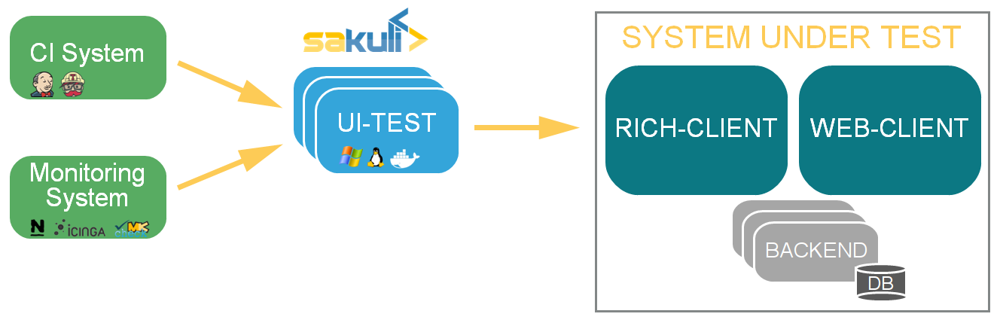
Sakuli simulates user actions on graphical user interfaces (web, fat client, citrix, …), and provides the obtained information (runtime, result, screenshots) to third party (e.g. Nagios compatible monitoring) systems.
Sakuli is written in Java and runs on many platforms:
-
MacOS
The Sakuli project brings together two Open-Source end-to-end testing tools which perfectly fit together: Sahi for web-based tests (by injecting JavaScript code into the browser), as well as the screenshot-based testing tool Sikuli, which allows the execution of keyboard and mouse actions on screen areas that have been defined by previously recorded screenshots and are recognized using the OpenCV engine.
Sakuli accesses both tools via its Java API and makes it possible to use them simultaneously. For example, web tests can be done very performant with Sahi (where a screenshot-based approach would be at best the second choice), whereas "off-DOM"-content can be catched with Sikuli. Whenever a web test comes into a situation which Sahi can’t handle (e.g. a PIN dialogue for a smartcard login), use a Sikuli command. On the other hand, pure tests of fat client applications can be easily be setup by using only the Sikuli functions of Sakuli.

The integration of Sakuli in other tools can be done by different so called forwarder modules:
| Forwarder | Technology | Use cases |
|---|---|---|
default |
- Log-Files and screenshots |
- Continuous Integration server |
- JDBC-SQL |
- Integration in Nagios based monitoring systems as active checks with check_mysql_health |
|
- Gearman |
- Integration in Nagios based monitoring systems as passive checks |
|
- Icinga2 REST API |
- Integration in Icinga2 as passive checks |
1. Manual
1.2. Execution Types
Sakuli supports different execution types. Each of the types have a special purpose:
Native Execution |
+ Supports all end user platforms |
Maven Execution |
+ Easy integration in maven build cycle |
Containerized Execution |
+ Ready to use E2E environment without installation process |
1.2.1. Native Execution
1.2.1.1. Windows Client
Installation
This page describes the steps to install and test Sakuli on Windows. If you want to update Sakuli, see the Upgrade process documentation.
The default installation path of a particular Sakuli version is referenced as %SAKULI_HOME% (also called the "version" folder) which is inside of the folder "sakuli":
> echo %SAKULI_HOME%
C:\Program Files (x86)\sakuli\sakuli-v1.1.0-SNAPSHOTValues surrounded by double underscores are have to be filled individually by you (e.g. IP_ADDRESS).
You can run Sakuli on physical as well as on virtual Linux machines.
-
OS: Microsoft Windows (version 7 and higher)
-
64 Bit (recommended)
-
RAM: 2GB or more
-
CPU: at least two CPU cores
-
Software:
-
Java JRE >= 1.8
-
Set the desktop background to a homogenous color.
-
disable any screen locking mechanisms
-
Run Sakuli with a dedicated user
-
Sakuli needs a reliable and predictable desktop environment: make sure that there are no pop-up windows of services or applications
-
If Sakuli is running within a VM, change the desktop resolution to a fixed value (e.g. 1024x768) and disable any auto-resizing mechanisms of the guest display. This ensures that the guest’s resolution does not change in case that you resize its window.
-
the client should not have more than one physical screen
-
Download the Sakuli Installer from http://labs.consol.de/sakuli/install
-
current development snapshot =
sakuli-vX.X.X-SNAPSHOT-installer.jar -
current stable version =
sakuli-vX.X.X-installer.jar(recommended)
Double-click on the downloaded .jar file to start the installer:
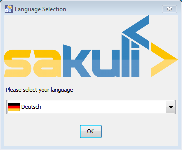
Read and accept the licence, choose the installation folder (any path the current user has rw permissions is ok) and select the packages to install:
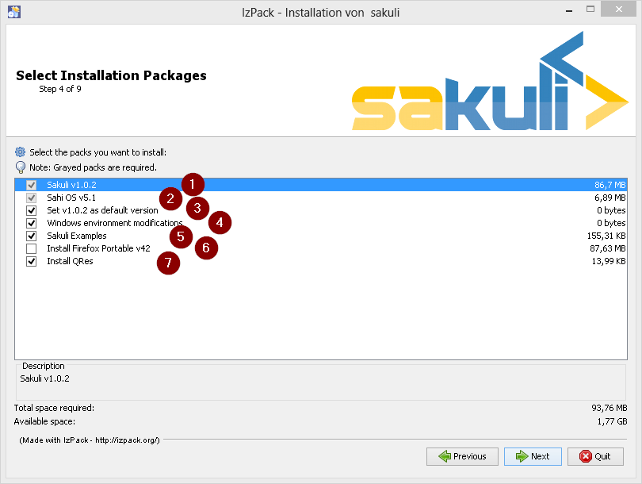
-
install Sakuli
-
install Sahi
-
set/update the environment variable
%SAKULI_HOME%to the new version. -
set/update environment settings which have proved as best practice for UI tests.
-
install one example test suite per OS which help you to test and understand Sakuli.
-
install Firefox Portable, which can be used exclusively for Sakuli Tests.
-
install QRes, a open source screen mode changer (Windows only)
In the end you are offered to generate a headless installation file which can be executed on other hosts with:
java -jar sakuli-vX.X.X-installer.jar auto-config.xmlReboot now to take the registry changes effect.
Now test if Sahi can start a Sahi-controlled browser.
Execute %SAKULI_HOME%\sahi\userdata\bin\start_dashboard.bat to open the Sahi Dashboard. It should now list all available browsers on this system.
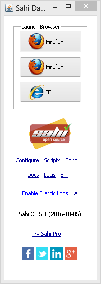
Click on any browser icon: it should start and present you the start page of Sahi:

At last, test the Sahi Controller by holding the ALT key and double-clicking on any white space on the page. If you are getting a new window showing the "Sahi Controller", you’re done. Close all browser windows and Sahi.
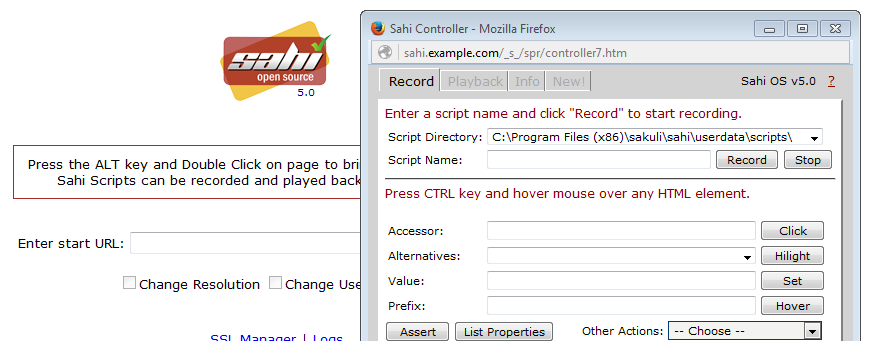
You are now ready to run the first minimal Sakuli test to see if Sakuli and its components are working well together. Open a new terminal to start a test:
-
Windows 7:
sakuli run INST_DIR\example_test_suites\example_windows7\ -
Windows 8:
sakuli run INST_DIR\example_test_suites\example_windows8\
Sakuli should now
-
open Firefox with the Sakuli welcome page, highlight some page elements
-
open the calculator and calculate 525+100=625
-
open an editor and write a status message
Additional documentation:
-
If you are sitting behing a company proxy, refer to Sahi behind a proxy.
-
Refer to Browser configuration for instructions how to register other browsers.
Optional software
Currently, each Sakuli test requires to start a browser, which is not very handy for pure Sikuli GUI tests (=where no browser at all is needed). For that case, use a headless browser like PhantomJS. Refer to Browser configuration for more information.
Attention: PhantomJS 2 is currently unsupported. Use version 1.9.x
Use a screenshot tool which is able to
-
capture areas of the screen
-
delay the creation of screenshots for x seconds (important if Sikuli must navigate through menues)
A good choice is
-
Greenshot on Windows
Always make sure that screenshots are saved without compression. Sikuli uses a default similarity of 0.99, which internally means that "more than 99%" => 100% pixels must conincide. Decreasing similarity should only be neccessary if the pattern images are of poor quality or the region compared to always slightly differs from the pattern image.
Next steps
-
Read our first-steps tutorial and learn to handle Sakuli
-
Integrate Sakuli results in monitoring systems:
-
Sakuli can also be integrated in continuous integration environments like Jenkins
RDP peculiarities
There are four ways to connect to and work on a Sakuli client machine:
-
VNC
-
Console of a virtualization platform (ESX, Virtualbox, etc.)
-
Remote Desktop (Windows)
-
local screen
For case 1. and 2. there is nothing special to watch out for, except that the screen must not be locked (otherwise Sikuli will also see a locked screen). The screen content will be the same as displays on a local screen (4.).
For RDP on Windows there are some special things to know. Connecting to the Sakuli test client via RDP locks any existing local console session of that user and attaches (="moves") it to a RDP session.
Sakuli will just as well run within that RDP session. But closing/disconnecting/logging of that RDP session will not unlock the local console session again. Sakuli will see the same as a regular user: nothing but a locked screen. Read the next paragraph to learn how to avoid this.
LOGOFF.batTo log off a RDP session, right-click %SAKULI_HOME%\bin\helper\LOGOFF.bat and execute the script with administrator privileges. The script then
-
determines the current RDP session ID
-
redirects this session back to the local console
-
terminates the RDP session.
check_logon_session.ps1In %SAKULI_HOME%\setup\nagios you can find check_logon_session.ps1 which can be used as a client-side Nagios check to ensure that the Sakuli user is always logged on, either via RDP or on the local console. Instructions for the implementation of this check can be found in the script header.
Define a service dependency of all Sakuli checks to this logon check; this will ensure that a locked session will not raise false alarms.

Troubleshooting
If you have some errors with your Windows installation, you can check the following points:
Windows 7 comes by default with an "aero" theme, which is quite awkward for Sikuli, because there are many transparency effects which cause window elements to change their appearance dependend on the elements below. For that, change the theme to "Windows Classic".

Furthermore, change the colors of active and inactive title bars to non gradient:

The following steps have only to be done if you are accessing the Sakuli Client via RDP.
The "paste" function of Sakuli uses the clipboard at runtime to decrypt and paste passwords. For this reason, the clipboard exchange of the Sakuli client and the RDP client should be suppressed in the settings tab of your local Remote Desktop client:

This can be set globally in the registry of your local host:
-
regedit -
[ HKEY_CURRENT_USER\Software\Microsoft\Terminal Server Client ] -
DisableDriveRedirection(DWORD)=>1
If you minimize the Remote Desktop window (the window that display the remote computer’s desktop), the operating system switches the remote session to a "GUI-less mode" which does not transfer any window data anymore. As a result, Sakuli is unable to interact with the tested application’s GUI, as the whole screen is not visible.
To disable the "GUI-less" mode on your local host:
-
regedit -
[ HKEY_CURRENT_USER\Software\Microsoft\Terminal Server Client ] -
RemoteDesktop_SuppressWhenMinimized(DWORD)=>2
1.2.1.2. Linux Client
Installation
This page describes the steps to install and test Sakuli on Ubuntu Linux 16.04 LTS. For other distributions (CentOS, OpenSuSE, …) they be mostly identical. If you want to update Sakuli, see the Upgrade process documentation.
The default installation path of a particular Sakuli version is referenced as $SAKULI_HOME (also called the "version" folder) which is inside of the folder "sakuli":
> echo $SAKULI_HOME
/opt/sakuli/sakuli-v1.1.0-SNAPSHOTValues surrounded by double underscores are have to be filled individually by you (e.g. IP_ADDRESS).
You can run Sakuli on physical as well as on virtual Linux machines.
-
Linux OS (here: Ubuntu 16.04 LTS Desktop)
-
64 Bit (recommended)
-
RAM: 2GB or more
-
CPU: at least two CPU cores
-
Set the desktop background to a homogenous color.
-
disable any screen locking mechanisms
-
Run Sakuli with a dedicated user
-
Sakuli needs a reliable and predictable desktop environment: make sure that there are no pop-up windows of services or applications
-
If Sakuli is running within a VM, change the desktop resolution to a fixed value (e.g. 1024x768) and disable any auto-resizing mechanisms of the guest display. This ensures that the guest’s resolution does not change in case that you resize its window.
-
Other optional steps see Install GNOME session fallback theme.
-
the client should not have more than one physical screen
-
Download the Sakuli Installer from http://labs.consol.de/sakuli/install
-
current development snapshot =
sakuli-vX.X.X-SNAPSHOT-installer.jar -
current stable version =
sakuli-vX.X.X-installer.jar(recommended)
Execute java -jar sakuli-vX.X.X-installer.jar to start the installer:
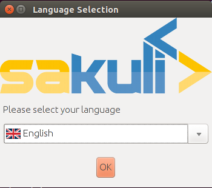
Read and accept the licence, choose the installation folder (any path the current user has rw permissions is ok) and select the packages to install:
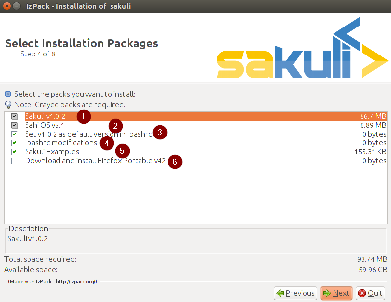
-
install Sakuli
-
install Sahi
-
set/update the environment variable
$SAKULI_HOMEwhich points to the new version. -
set/update
.bashrc -
install one example test suite per OS which help you to test and understand Sakuli.
-
install Firefox Portable, which can be used exclusively for Sakuli Tests
In the end you are offered to generate a headless installation file which can be executed on other hosts with:
java -jar sakuli-vX.X.X-installer.jar auto-config.xmlNow test if Sahi can start a Sahi-controlled browser.
Execute $SAKULI_HOME/sahi/userdata/bin/start_dashboard.sh to open the Sahi Dashboard. It should now list all available browsers on this system.
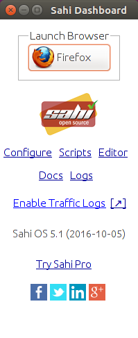
Click on any browser icon, it should start and present you the start page of Sahi:
At last, test the Sahi Controller by holding the ALT key and double-clicking on any white space on the page. If you are getting a new window showing the "Sahi Controller", you’re done. Close all browser windows and Sahi.
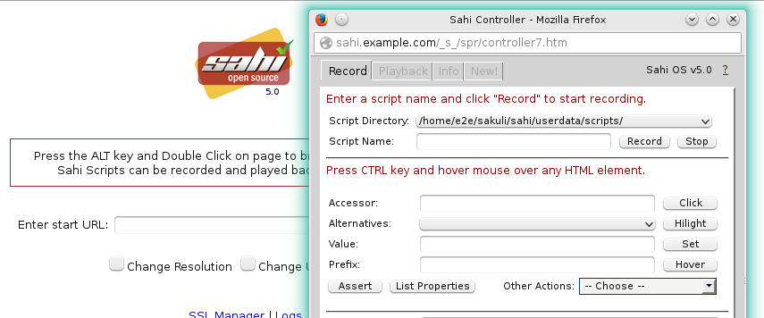
On Linux deskops the ALT key is often predefined to drag windows. In this case, open $SAKULI_HOME/sahi/config/sahi.properties and change the "hotkey" property:
|
controller.hotkey=SHIFTYou are now ready to run the first minimal Sakuli test to see if Sakuli and its components are working well together. Open a new terminal to start a test:
sakuli run __INST_DIR__/example_test_suites/example_ubuntu/Sakuli should now
-
open Firefox with the Sakuli welcome page, highlight some page elements
-
open the calculator and calculate 525+100=625
-
open an editor and write a status message
Additional documentation
-
If you are sitting behing a company proxy, refer to Sahi behind a proxy.
-
Refer to Browser configuration for instructions how to register other browsers.
Optional software
Currently, each Sakuli test requires to start a browser, which is not very handy for pure Sikuli GUI tests (=where no browser at all is needed). For that case, use a headless browser like PhantomJS. Refer to Browser configuration for more information.
Attention: PhantomJS 2 is currently unsupported. Use version 1.9.x
Use a screenshot tool which is able to
-
capture areas of the screen
-
delay the creation of screenshots for x seconds (important if Sikuli must navigate through menues)
A good choice is
Always make sure that screenshots are saved without compression. Sikuli uses a default similarity of 0.99, which internally means that "more than 99%" => 100% pixels must conincide. Decreasing similarity should only be neccessary if the pattern images are of poor quality or the region compared to always slightly differs from the pattern image.
Next steps
-
Read our first-steps tutorial and learn to handle Sakuli
-
Integrate Sakuli results in monitoring systems:
-
Sakuli can also be integrated in continuous integration environments like Jenkins
Headless checks
Running Sakuli on the user desktop is nice, but has the drawback that the session gets highjacked on each Sakuli run. Moving the mouse e.g. can have negative effects on the test execution.
For that reason we advise to run Linux based Sakuli checks in in one of the following modes:
-
in a virtual display (="headless"), which is straightforward in Linux (documented on this page)
-
in Docker containers (more scalable)
On Ubuntu, first install vnc4server:
sudo apt-get install vnc4serverStart vncserver for the first time to create a session password:
~$ vncserver
You will require a password to access your desktops.
Password:
Verify:
New 'sakulidemo:1 (sakuli)' desktop is sakulidemo:1
Creating default startup script __HOME__/.vnc/xstartup
Starting applications specified in __HOME__/.vnc/xstartup
Log file is __HOME__/.vnc/sakulidemo:1.log.vnc/xstartup controls what to start within a xvnc session. Do not touch this file on OpenSUSE; on Ubuntu you have to replace its content with the following lines (because you are using gnome-session-fallback, aren’t you…?):
~$ vim .vnc/xstartup
#!/bin/sh
export XKL_XMODMAP_DISABLE=1
unset SESSION_MANAGER
unset DBUS_SESSION_BUS_ADDRESS
gnome-panel &
gnome-settings-daemon &
metacity &Restart the current vnc sesssion:
~$ vncserver -kill :1 && vncserverNow open a RDP client (on Ubuntu: Applications - Internet - Remmina Remote Desktop Client) and enter the connection data:
-
Protocol: VNC
-
Server: localhost:5901
-
Password:
VNC_SESSION_PASSWORD
You should see now an empty GNOME/KDE desktop - started headless!
You are now ready to run the minimal Sakuli check in headless (=VNC) mode. Sakuli provides for this task a pre- and postHook script, which can be used like follow:
On the Ubuntu desktop, open a terminal window and execute
-
on Ubuntu:
sakuli run INST_DIR/example_test_suites/example_ubuntu/ --vnc -
on openSUSE:
SAKULI_HOME/bin/sakuli.sh --run INST_DIR/example_test_suites/example_opensuse/ --vnc
You should see that Sakuli
-
opens Firefox
-
opens the calculator and calculates 525+100=625
-
opens an editor and writes a status message

Troubleshooting
If you have some errors with your Linux installation, you can check the following points:
Sakuli can test on Unity, of course - but gnome-session-fallback is more than sufficient…
sudo apt-get install gnome-session-fallback
After the installation, relogin and select the desktop environment GNOME Flashback (Metacity):


The Ubuntu menu bar should have changed now to the "classical" one:

In headless checks you will encounter problems using the TAB key as well as s:
-
The TAB key will switch applications (like
ALT + TAB) -
swill open the applications menu
For some reason (?), gsettings binds s and TAB to the Super key by default. Open a terminal as the Sakuli user and execute the following commands to restore that to the default:
gsettings set org.gnome.desktop.wm.keybindings switch-applications "['<Alt>Tab']"
gsettings set org.gnome.desktop.wm.keybindings panel-main-menu "['<Alt>F1']"1.2.1.3. Upgrade process
Before you upgrade your current Sakuli installation, please ensure that you have read the Change Log.
Execute SAKULI_HOME/../Uninstaller/uninstaller.jar to remove the current installed version. This will only affect the files in SAKULI_HOME. The uninstaller removes all installed files, and resets the environment configuration.
After that just install the new version.
1.2.2. Maven Execution
1.2.2.1. Sakuli Java DSL
Sakuli provides a Java DSL for writing test cases in pure Java. The DSL is designed as fluent API and provides the exact same capabilities as the Javascript API.
Usage
The Sakuli Java DSL comes to you as Maven module JAR file. You can add the module to your Sakuli project as Maven dependency. Currently the Java tests have to be written with the TestNG unit framework, so also provide the TestNG Maven dependency in your project POM:
<dependencies>
<dependency>
<groupId>org.sakuli</groupId>
<artifactId>java-dsl</artifactId>
<version>${sakuli.version}</version>
<scope>test</scope>
</dependency>
<!-- needed for AbstractSakuliTest class -->
<dependency>
<groupId>org.sakuli</groupId>
<artifactId>java-dsl</artifactId>
<version>${sakuli.version}</version>
<type>test-jar</type>
<scope>test</scope>
</dependency>
<dependency>
<groupId>org.testng</groupId>
<artifactId>testng</artifactId>
<version>${testng.version}</version>
<scope>test</scope>
</dependency>
</dependencies>In the last step, we have to provide also some local resources for our Sakuli test setup. Therefore we use the maven-dependency-plugin to unpack all needed Sakuli resources to our local project.build.outputDirectory:
<build>
<plugins>
<plugin>
<groupId>org.apache.maven.plugins</groupId>
<artifactId>maven-dependency-plugin</artifactId>
<executions>
<execution>
<id>unpack</id>
<phase>generate-resources</phase>
<goals>
<goal>unpack</goal>
</goals>
<configuration>
<artifactItems>
<artifactItem>
<groupId>org.sakuli</groupId>
<artifactId>java-dsl</artifactId>
<version>${sakuli.version}</version>
<type>jar</type>
<overWrite>true</overWrite>
</artifactItem>
</artifactItems>
<outputDirectory>${project.build.outputDirectory}</outputDirectory>
</configuration>
</execution>
</executions>
</plugin>
</plugins>
</build>Now we are ready to write Java tests. See the following sample test which uses TestNG unit testing library in combination with Sakuli Java DSL:
public class FirstExampleTest extends AbstractSakuliTest {
Environment env;
@BeforeClass
@Override
public void initTC() throws Exception {
super.initTC();
env = new Environment();
}
@Override
protected TestCaseInitParameter getTestCaseInitParameter() throws Exception {
return new TestCaseInitParameter("test1");
}
@Test
public void testCitrus() throws Exception {
browser.open();
browser.navigateTo("http://www.citrusframework.org/");
ElementStub heading1 = browser.paragraph("Citrus Integration Testing");
heading1.highlight();
assertTrue(heading1.isVisible());
ElementStub download = browser.link("/Download v.*/");
download.highlight();
assertTrue(download.isVisible());
download.click();
ElementStub downloadLink = browser.cell("2.6.1");
downloadLink.highlight();
assertTrue(downloadLink.isVisible());
}
}All people that are familiar with TestNG unit testing will notice that a Sakuli Java test is nothing but a normal TestNG
unit test. Sakuli just adds the end-to-end testing capabilities. The test class extends an abstract class coming from Sakuli.
This AbstractSakuliTest provides convenient access to the Sakuli Java DSL API.
These are methods such as initTC() and getTestCaseInitParameter() that are customizable in test classes. Just
override the methods and add custom logic. In addition to that the abstract super class in Sakuli provides access to the
browser field that represents the Sahi web browser capabilities. This browser object is used in the test cases to trigger
Sahi related actions such as opening a website and highlighting links or buttons.
In the example above we open a website http://www.citrusframework.org/ and assert the content on that page. In the example above we open a website http://www.citrusframework.org/ and assert the content on that page.
Now lets add some testing logic that works with content other than HTML dom related content. We add a test step that puts focus to the web browser task bar. In detail we click into the browser search input field, fill in a word and perform the search.
new Region().find("search").click().type("Citrus");
env.sleep(1);
new Region().takeScreenshot("test.png");The region object provides access to Sakuli screen related actions such as finding a component on the screen. We can click that region
and fill in some characters (e.g. in the search input field). After that we sleep some time to give the search operation some
time to perform its actions. As a last step we take a screenshot of the result page and the test is finished.
This little example demonstrates the basic usage of the Sakuli Java API. We write normal Java unit tests with TestNG and add Sakuli specific actions on HTML dom content in a browser or any native application operations by screen related access.
Next we will setup a complete sample project for Sakuli Java.
Sakuli Java Example
The next section describes how to get started with the Sakuli Java DSL by example. The Java example is a fully runnable Java sample test case. So at the end of this chapter you should be able to start writing Sakuli test in pure Java.
An example how to use Java DSL and setup Maven you will find at: github.com/ConSol/sakuli-examples
Installation
-
Install Java Development Kit version 8.
-
Install Maven (Version 3.2.5 or higher).
-
Download
java-exampledirectory from github.com/ConSol/sakuli-examples.
-
Import
java-exampleto IDE (IntelliJ or Eclipse…) as Maven project: Example for IntelliJ: -
Choose
Project from Existing Sources…in File menu. -
Choose
pom.xmland clicknextbutton till the project is imported.
Try to compile the new Sakuli Maven project. If an ERROR is reported please check your pom.xml first. The following section has to be present in your Maven POM:
<repository>
<id>labs-consol-snapshots</id>
<name>ConSol* Labs Repository</name>
<url>http://labs.consol.de/maven/snapshots-repository</url>
<snapshots>
<enabled>true</enabled>
</snapshots>
<releases>
<enabled>false</enabled>
</releases>
</repository>The ConSol labs Maven repository should be placed to the repositories section in your POM. After this is done please execute the Maven compile phase.
For customized browser detection create your own browser_types.xml file. This file should be located in main/resources/sahi/userdata/config package in src folder.
The content of this file looks like follows:
<browserTypes>
<browserType>
<name>firefox</name>
<displayName>Firefox</displayName>
<icon>firefox.png</icon>
<path>$ProgramFiles (x86)\Mozilla Firefox\firefox.exe</path>
<options>-profile "$userDir/browser/ff/profiles/sahi$threadNo" -no-remote</options>
<processName>firefox.exe</processName>
<capacity>5</capacity>
</browserType>
<browserType>
<name>ie</name>
<displayName>IE</displayName>
<icon>ie.png</icon>
<path>$ProgramFiles\Internet Explorer\iexplore.exe</path>
<options>-noframemerging</options>
<processName>iexplore.exe</processName>
<useSystemProxy>true</useSystemProxy>
<capacity>5</capacity>
</browserType>
<browserType>
<name>chrome</name>
<displayName>Chrome</displayName>
<icon>chrome.png</icon>
<path>C:\Program Files (x86)\Google\Chrome\Application\chrome.exe</path>
<options>--incognito --user-data-dir=$userDir\browser\chrome\profiles\sahi$threadNo --proxy-server=localhost:9999 --disable-popup-blocking</options>
<processName>chrome.exe</processName>
<capacity>5</capacity>
</browserType>
<browserType>
<name>safari</name>
<displayName>Safari</displayName>
<icon>safari.png</icon>
<path>$ProgramFiles (x86)\Safari\Safari.exe</path>
<options> </options>
<processName>safari.exe</processName>
<useSystemProxy>true</useSystemProxy>
<capacity>1</capacity>
</browserType>
<browserType>
<name>opera</name>
<displayName>Opera</displayName>
<icon>opera.png</icon>
<path>$ProgramFiles (x86)\Opera\opera.exe</path>
<options> </options>
<processName>opera.exe</processName>
<useSystemProxy>true</useSystemProxy>
<capacity>1</capacity>
</browserType>
</browserTypes>| If needed change the <path> for your own locations of each browser! |
Now you can execute test phase and enjoy the successful execution of the test.
1.2.3. Containerized Execution
1.2.3.1. Sakuli Docker Images
Docker allows you to run a Sakuli test in an isolated environment, called "container", which is always started off from the same base image. This ensures that tests always run under equal conditions.
Image OS types
The repository’s subfolder ./docker contains all source files Sakuli docker images are made of. Currently we provide images on DockerHub for:
-
CentOS 7 (consol/sakuli-centos-xfce, consol/sakuli-centos-xfce-java)
-
Ubuntu 14.04 LTS (consol/sakuli-ubuntu-xfce, consol/sakuli-ubuntu-xfce-java)
Image tags
The build process on DockerHub is triggered by Github hooks; that means that you are always getting the current version for the two branches
-
master -> image tag "latest": contains the latest stable release of Sakuli
-
dev -> image tag "dev": contains the latest snapshot version of Sakuli
Architecture of Sakuli Containers
Each Sakuli docker image is installed with the following components:
The running containers are accessible with VNC (default password: sakuli) by:
-
VNC viewer:
DOCKER_HOST:5901 -
noVNC HTML5 client: link: http://localhost:6901/vnc_auto.html?password=sakuli
Get Sakuli Docker Images
The following example command pulls the CentOS7 image from DockerHub:
docker pull consol/sakuli-centos-xfceAlternatively, you can build this image from the sources:
git clone https://github.com/ConSol/sakuli.git
docker build -t consol/sakuli-centos-xfce docker/sakuli-centos-xfce .Once you have pulled/built the image, you can start a container on top of it which binds port 5901/tcp and 6901/tcp to localhost (on native docker installations; $DOCKER_IP on boot2docker):
# default tag "latest" = Sakuli stable
docker run -it -p 5901:5901 -p 6901:6901 consol/sakuli-centos-xfce
# tag "dev" = Sakuli Snapshot version of dev branch
docker run -it -p 5901:5901 -p 6901:6901 consol/sakuli-centos-xfce:devThe container will execute a small headless self-test and exit afterwards. Read on to learn how to execute your own JavaScript or Java based tests within this containers.
Run JavaScript based Test
There are three important lines in the Dockerfile of each Sakuli image which define what has to be done on a container start:
ENV SAKULI_TEST_SUITE /root/sakuli/example_test_suites/example_xfce
ENTRYPOINT ["/root/scripts/sakuli_startup.sh"]
CMD ["run $SAKULI_TEST_SUITE"]-
ENTRYPOINTis the command which is executed once the container is started withdocker run. -
CMDis the default argument forENTRYPOINT, that is, to run a test suite set by a variable. -
ENV SAKULI_TEST_SUITEis set to the path of a test suite which has to run when the container starts. By default, this is set to the built-in folder/root/sakuli/example_test_suites/example_xfce.
There is more than one way to integrate a custom testsuite in a container, discussed in the following.
Assume you want to run a suite called suite_1 located on your host at the path /home/myuser/my-sakuli-testsuites - use one of the following ways:
Mount the suite folder on your host into the container and override CMD from Dockerfile (=argument for ENTRYPOINT) with custom parameters for the Sakuli starter sakuli. In this way you can also give further parameters to Sakuli e.g. to use another browser (-browser chrome).
# running tests in chrome
~$ docker run -it -p 5901:5901 -p 6901:6901 consol/sakuli-centos-xfce 'run "$SAKULI_TEST_SUITE" -browser chrome'To get all possible command line parameters call docker run consol/sakuli-ubuntu-xfce -help.
CMD can be overwritten in two ways:
~$ docker run -it -p 5901:5901 -p 6901:6901 -v "/home/myuser/my-sakuli-testsuites:/my-sakuli-testsuites" consol/sakuli-centos-xfce 'run /my-sakuli-testsuites/suite_1'This command will
-
mount the test suites folder to
/my-sakuli-testsuiteswithin the container -
execute the suite
suite_1
See docker run command.
SAKULI_TEST_SUITEMount a folder on your host into the container and override the environment variable SAKULI_TEST_SUITE.
~$ docker run -it -p 5901:5901 -p 6901:6901 \\
-v "/home/myuser/my-sakuli-testsuites:/my-sakuli-testsuites" \\
-e "SAKULI_TEST_SUITE=/my-sakuli-testsuites/suite_1" \\
consol/sakuli-ubuntu-xfceRun Java based test
Also for Sakuli test writen in Java and executed through Maven, we provide to preconfigured docker images:
For more information about how to write a Java based Sakuli test see [sakuli_java_dsl]. Now take a look at the important lines in the Dockerfile which define how the container will start:
WORKDIR /opt/maven
ENTRYPOINT ["/root/scripts/start_hook.sh"]
CMD ["mvn clean test"]-
WORKDIRis set to the path, where the maven build will be executed. By default, this is set to the built-in example folder/opt/maven. -
ENTRYPOINTis the command which is executed once the container is started withdocker run. -
CMDis the default argument forENTRYPOINT, what will trigger the Maven build, which contains the Java based Sakuli tests.
Assume you want to run the Sakuli end-2-end test from your Maven project located at the path /home/myuser/my-sakuli-maven-project you can executed the Maven build in the inside of the Sakuli container like follow:
~$ docker run -it -p 5901:5901 -p 6901:6901 -v "/home/myuser/my-sakuli-maven-project:/opt/maven" consol/sakuli-ubuntu-xfce-javaThis command will
-
mount the test suites folder to
/home/myuser/my-sakuli-maven-projectwithin the container -
execute the maven build with default command
mvn clean test
If you want to for example also build youre maven artifacts over mvn install override the default command like follow:
~$ docker run -it -p 5901:5901 -p 6901:6901 -v "/home/myuser/my-sakuli-maven-project:/opt/maven" consol/sakuli-ubuntu-xfce-java 'mvn clean install'See Run Java based test.
Override VNC environment variables
The following VNC environment variables can be overwritten at the docker run phase to customize your desktop environment inside the container:
-
VNC_COL_DEPTH, default:24 -
VNC_RESOLUTION, default:1280x1024 -
VNC_PW, default:sakuli
For example, the password for VNC could be set like this:
~$ docker run -it -p 5901:5901 -p 6901:6901 -e "VNC_PW=my-new-password" \\
consol/sakuli-ubuntu-xfce1.2.3.2. Docker Compose
Assume you want to run a suite called suite_1 located on your host at the path /home/myuser/my-sakuli-testsuites.
|
Like in all docker containers you can overwrite all environment variables in a docker-compose.yml like for example the VNC_PW (Override VNC environment variables).
|
A more elegant way as using the docker run command to parameterize your container startup, is to pack all into a Docker Compose file. You can create docker-compose.yml to integrate a custom testsuite in a container in the following ways:
Run JavaScript based test
To have the correct working directory, place the docker-compose.yml under /home/myuser/my-sakuli-testsuites
|
sakuli-example-ubuntu:
image: consol/sakuli-centos-xfce
ports:
- 5901:5901
- 6901:6901
volumes:
- .:/my-sakuli-testsuites
command: run /my-sakuli-testsuites/suite_1When executed in the same directory as docker-compose.yml, a simple docker-compose up will bring up all containers.
Intentionally, docker-compose is made to bring up environments with multiple containers which are linked together, but even with one container it eases the parameter handling.
|
docker-compose up --force-recreate removes all currently stopped and running containers before it starts the containers, which defined in the docker-compose.yml. Otherwise, if a normal docker-compose up will called again, the test execution will reattach the instance and the start the test execution again in the same container instance.
|
Similar to docker run command, the file docker-compose.yml would look like this:
sakuli-example-ubuntu:
image: consol/sakuli-ubuntu-xfce
ports:
- 5901:5901
- 6901:6901
volumes:
- .:/my-sakuli-testsuites
environment:
- SAKULI_TEST_SUITE=/my-sakuli-testsuites/suite_1Run Java based test
Similar to the usage of Run Java based test, you can to pack all parameters into a Docker Compose file. Create docker-compose.yml:
sakuli-example-ubuntu:
image: consol/sakuli-ubuntu-xfce-java
ports:
- 5901:5901
- 6901:6901
volumes:
- .:/opt/mavenWhen executed in the same directory as docker-compose.yml, a simple docker-compose up will bring up all containers.
Intentionally, docker-compose is made to bring up environments with multiple containers which are linked together, but even with one container it eases the parameter handling.
|
docker-compose up --force-recreate removes all currently stopped and running containers before it starts the containers, which defined in the docker-compose.yml. Otherwise, if a normal docker-compose up will called again, the test execution will reattach the instance and the start the test execution again in the same container instance.
|
Like above you can for example also override the default mvn command and use a additional persistent volume for caching the maven dependencies:
version: '2'
services:
sakuli_java_test:
image: consol/sakuli-ubuntu-xfce-java
volumes:
- /home/myuser/my-sakuli-maven-project:/opt/maven
- data:/root/.m2
network_mode: "bridge"
ports:
- 5911:5901
- 6911:6901
command: mvn clean install
# to keep container running and login via `docker exec -it javaexample_sakuli_java_test_1 bash`
# command: --tail-log
volumes:
data:
driver: local1.3. Sakuli Testdefinition
1.3.1. Sakuli API
Sakuli provides methods of three different types:
-
JS/Java methods of Sahi, which can be used 100% natively
-
JS/Java methods which encapsulate a subset of the Sikuli Java API
-
JS/Java methods of Sakuli framework itself (testcase stuff, exception handling, …)
| All classes and methods are implemented identical for Java and JavaScript |
For the detailed documentation see:
1.3.1.2. Sahi-API
All Sahi-API functions are natively usable in Sakuli. For a complete documentation, see Sahi-API.
Members
1.3.1.3. TestCase
TestCase - initializes the Sakuli object and sets the warning and critical time for this test case.
Params
-
warningTime
number- threshold in seconds. If the threshold is set to 0, the execution time will never exceed, so the state will be always OK! -
criticalTime
number- threshold in seconds. If the threshold is set to 0, the execution time will never exceed, so the state will be always OK! -
optImagePathArray
Array.<String>- (optional) Path or Array of Paths to the folder containing the image patterns for these test cases.
Returns: - an initialized Sakuli object. Example
var testCase = new TestCase(20,30, "path-to/image-folder-name");Members
Adds the additional paths to the current image library of the TestCase. If a relative path is assigned, the current testcase folder will be used as current directory.
Params
-
imagePaths
string- one or more path strings
A step allows to sub-divide a case to measure logical units, such as "login", "load report" etc. in its particular runtime. When a case starts, Sakuli starts a "step" timer. It gets read out, stored with the step name, and resetted each time endOfStep() is called. If the step runtime exceeds the step threshold (second parameter, optional), the step is saved with state "WARNING" (there is no CRITICAL state).
Params
-
stepName
String -
optWarningTime
number- (optional) threshold in seconds, default = 0. If the threshold is set to 0, the execution time will never exceed, so the state will be always OK!
Handles any Exception or Error. The handleException function calls the Java backend and stores the Exception for further processing.
Use it at the end of a catch-block.
Params
-
e
Error- any Exception or Error
Example
try {
... do something
} catch (e) {
sakuli.handleException(e);
}Saves the results of the current test case for further processing.
Should be called in finally-block of the test case:
Example
try {
... do something
} catch (e) {
sakuli.handleException(e);
} finally {
sakuli.saveResult();
}Returns the current id of this test case.
Returns: String - id
Updates and returns the URL of the last visited URL
Returns: String - last visited URL
Returns: String - the folder path of the current testcase.
Returns: String - the folder path of the current testcase.
Creates a new test case based exception with an optional screenshot at the calling time. Will be called from sakuli.js or in side of 'org.sakuli.javaDSL.AbstractSakuliTest'.
Params
-
message
String- error message -
screenshot
Boolean- enable / disable screenshot functionality
1.3.1.4. Application
Application Class - Represents an application.
Params
-
applicationNameOrPath
String- Path to the application file. Example:C:\Windows\system32\notepad.exe -
optResumeOnException
Boolean- Determines whether to ignore exceptions from this class. If this parameter is undefined, it will be false.
Returns: Application - an initialized object.
Example
//windows
var editor = new Application("notepad.exe");
//linux
var editor = new Application("gedit");Members
Opens the created application. For application with a long load time you may need to change the default sleep time with setSleepTime(…).
Returns: - this Application object.
Focuses the current application, if the application is in the background.
Returns: - this Application object.
Focuses a specific window of the application.
Params
-
windowNumber
number- identifies the window
Returns: - this Application object.
Closes the already existing application.
Params
-
optSilent
boolean- (optional) if true, no exception will be thrown on errors and stop the test execution.
Returns: - this Application object.
Kill the already existing application hardly.
Params
-
optSilent
boolean- (optional) if true, no exception will be thrown on errors.
Returns: - this Application object.
Sets the sleep time in seconds of the application actions to handle with long loading times. The default sleep time is set to 1 seconds.
Params
-
seconds
number- sleep time in seconds
Returns: - this Application object.
Creates and returns a Region object from the application.
Returns: - a Region object.
Creates and returns a Region object from a specific window of the application.
Params
-
windowNumber
number- identifies the window
Returns: - a Region object.
Returns: - the name of the current application.
1.3.1.5. Environment
Environment - Represents the environment of the current test host.
Params
-
optResumeOnException
Boolean- (optional) if this parameter is undefined, it will be false.
Members
Set a new default similarity for the screen capturing methods.
Params
-
similarity
number- value between 0 and 1, default = 0.8
Returns: - this Environment or NULL on errors.
Resets the current similarty of the screen capturing methods to the original default value of 0.8.
Returns: - this Environment or NULL on errors.
Get a Region object from the current focused window
Returns: - a Region object from the current focused window or NULL on errors.
Takes a screenshot of the current screen and saves it to the overgiven path. If there ist just a file name, the screenshot will be saved in your testsuite log folder.
Params
-
pathName
String-pathname/filname.formator justfilename.format
Example
environment.takeScreenshot("test.jpg");Blocks the current testcase execution for x seconds
Params
-
seconds
number- to sleep
Returns: - this Environment or NULL on errors.
Returns: - the current content of the clipboard as String or NULL on errors
sets the String paramter to the system clipboard
Params
-
text
String- text as string
Returns: - this Environment.
pastes the current clipboard content into the focused area. Will do the same as "STRG + V".
Returns: - this Environment.
copy the current selected item or text to the clipboard. Will do the same as "STRG + C".
Returns: - this Environment.
Clean the content of the clipboard.
pastes the text at the current position of the focus/carret <br/>using the clipboard and strg/ctrl/cmd-v (paste keyboard shortcut)
Params
-
text
String- a string, which might contain unicode characters
Returns: - this Environment or NULL on errors.
makes a masked paste(String) without any logging.
Params
-
text
String- a string, which might contain unicode characters
Returns: - this Environment or NULL on errors.
combines pasteMasked(String) and decryptSecret(String).
Params
-
text
String- encrypted secret
Returns: - this Environment or NULL on errors.
Enters the given text one character/key after another using keyDown/keyUp. <p/> About the usable Key constants see documentation of Key. The function could also type UTF-8 unicode characters, if the OS supports it. The text is entered at the current position of the focus.
Params
-
text
String- containing characters and/or Key constants -
optModifiers
String- (optional) an String with only Key constants.
Returns: - this Environment or NULL on errors.
Enters the given text one character/key after another using keyDown/keyUp. The entered text will be masked at the logging. <p/> About the usable Key constants see documentation of Key. The function could also type UTF-8 unicode characters, if the OS supports it. The text is entered at the current position of the focus.
Params
-
text
String- containing characters and/or Key constants -
optModifiers
String- (optional) an String with only Key constants.
Returns: - this Environment or NULL on errors.
Decrypt and enters the given text one character/key after another using keyDown/keyUp. The entered text will be masked at the logging. For the details of the decryption see decryptSecret(String). <p/> About the usable Key constants see documentation of Key. The function could also type UTF-8 unicode characters, if the OS supports it. The text is entered at the current position of the focus.
Params
-
text
String- containing characters and/or Key constants -
optModifiers
String- (optional) an String with only Key constants.
Returns: - this Environment or NULL on errors.
Decrypt a encrypted secret and returns the value at runtime. The decryption will only work if the encryption and decryption happen on the same physical machine. There will be no logging with the decrypted secret during this step. <p/> To create a encrypted secret see "sakuli-manual.md".
Params
-
secret
String- encrypted secret as String
Returns: - decrypted String
Press and hold the given keys including modifier keys <br/> use the key constants defined in class Key, <br/> which only provides a subset of a US-QWERTY PC keyboard layout <br/> might be mixed with simple characters<br/> use + to concatenate Key constants
Params
-
keys
String- valid keys
Returns: - this Environment or NULL on errors.
release the given keys (see Environment.keyDown(…)).
Params
-
keys
String- valid keys
Returns: - this Environment or NULL on errors.
Compact alternative for type() with more options
-
special keys and options are coded as #XN. or #X+ or #X- where X is a reference for a special key and N is an optional repeat factor
A modifier key as #X. modifies the next following key the trailing . ends the special key, the + (press and hold) or - (release) does the same, but signals press-and-hold or release additionally.
except #W / #w all special keys are not case-sensitive
a #wn. inserts a wait of n millisecs or n secs if n less than 60
a #Wn. sets the type delay for the following keys (must be > 60 and denotes millisecs) -
otherwise taken as normal wait
Example: wait 2 secs then type CMD/CTRL - N then wait 1 sec then type DOWN 3 times
Windows/Linux: write("#w2.#C.n#W1.#d3.")
Mac: write("#w2.#M.n#W1.#D3.")
for more details about the special key codes and examples consult the sikuliX docs.
Params
-
text
String- a coded text interpreted as a series of key actions (press/hold/release)
Returns: - this Environment or NULL on errors.
move the mouse pointer to the given target location and move the wheel the given steps down.
Params
-
steps
number- the number of steps
move the mouse pointer to the given target location and move the wheel the given steps up.
Params
-
steps
number- the number of steps
Returns: boolean - true, if the OS is any instance of an Windows based OS
Returns: boolean - true, if the OS is any instance of an Linux based OS
Returns: string - identifier of the current OS
Runs the assigned command on the host and returns the result. Attention: this is OS depended feature! So be
aware which os you are running, maybe us to check Environment#isLinux() or Environment#isWindows().
Params
-
command
string- OS depended command asString -
optThrowException
boolean- defines if an exception should be thrown, if the exit code != 0
Returns: - the result as CommandLineResult object, you can use the methods result.getOutput() and result.getExitCode()
Example:
var app;
if(environmen.runCommand('uname --machine') == 'x86_64'){
//open app from other path
app = new Application('/lib64/appname');
} else {
app = new Application('/lib/appname');
}1.3.1.6. Key
Key - representing some Key constants which can be used in type functions as input text and as modifier keys.
The following Key values are possible:
SPACE, ENTER, BACKSPACE, TAB, ESC, UP, RIGHT, DOWN, LEFT, PAGE_UP, PAGE_DOWN, DELETE, END,
HOME, INSERT, F1, F2, F3, F4, F5, F6, F7, F8, F9, F10, F11, F12, F13, F14, F15,
SHIFT, CTRL, ALT, ALTGR, META, CMD, WIN, PRINTSCREEN, SCROLL_LOCK, PAUSE, CAPS_LOCK, NUM0,
NUM1, NUM2, NUM3, NUM4, NUM5, NUM6, NUM7, NUM8, NUM9, SEPARATOR, NUM_LOCK, ADD, MINUS,
MULTIPLY, DIVIDE, DECIMAL, CONTEXT
Using Key.ALTGR on Unix:
To enable the key command ALTGR for unix systems please bind it to CTRL + ALT, for more information
see stackexchange.com - how-to-bind-altgr-to-ctrl-alt.
Example
Closing an window over typing the short cut ALT + F4:
env.type(Key.F4, Key.ALT);Members
1.3.1.7. Logger
Logger - Logging functions to do 'debug, 'info', 'warning' and 'error' log entries.
Members
make a error-log over Java backend into the log file. This won’t stop the execution of the test case.
Params
-
message
String- as a String
make a debug-log over Java backend into the log file.
Params
-
message
String- as a String
make a info-log over Java backend into the log file.
Params
-
message
String- as a String
make a debug-log over Java backend into the log file.
Params
-
message
String- as a String
1.3.1.8. MouseButton
MouseButton - representing the possible mouse action button.
The following MouseButton values are possible:
LEFT, RIGHT, MIDDLE
Example Press and release the right mouse button vor 3 seconds on a specified region:
var region = new Region().find("your-pattern.png");
region.mouseDown(MouseButton.RIGHT).sleep(3).mouseUp(MouseButton.RIGHT);Members
1.3.1.9. Region
Region - Represents a region as a part of or the hole screen.
Params
-
optResumeOnException
Boolean- if true, the test execution won’t stop on an occurring error. Default: false.
Example
var screen = new Region(); //represents the hole screen`Members
Finds an image inside this region immediately.
Params
-
imageName
String- name of the preloaded picture (if not set, the find operation will take place on the predefined region object.)
Returns: - the found Region or if the target can’t be found null.
Finds a target in this Region immediately;
Returns: - the found Region or if the target can’t be found null.
Check whether the give pattern is visible on the screen.
Params
-
imageName
String- if set, the function search inside the given region for the image -
optWaitSeconds
number- if set, the function search for x seconds for the pattern.
Returns: - this Region or null
makes a mouse click on the center of the Region.
Returns: - the Region or NULL on errors.
makes a double click on the center of the Region.
Returns: - the Region or NULL on errors.
makes a right click on the center of the Region.
Returns: - the Region or NULL on errors.
Move the mouse pointer to the center of the Region and "hovers" it.
Returns: - the Region or NULL on errors.
Low-level mouse action to press the assigned MouseButton on the current position.
Params
-
mouseButton - on of MouseButton values
Returns: - the Region or NULL on errors.
Example Press and release the right mouse button vor 3 seconds on a specified region:
var region = new Region().find("your-pattern.png");
region.mouseDown(MouseButton.RIGHT).sleep(3).mouseUp(MouseButton.RIGHT);Low-level mouse action to release the assigned MouseButton.
Params
-
mouseButton - on of MouseButton values
Returns: - the Region or NULL on errors.
Example
Press and release the right mouse button vor 3 seconds on a specified region:
var region = new Region().find("your-pattern.png");
region.mouseDown(MouseButton.RIGHT).sleep(3).mouseUp(MouseButton.RIGHT);Drag from region’s current position and drop at given targetRegion and using the left mouse.
Params
-
targetRegion <code>Region</code> - target where to drop
Returns: - the Region or NULL on failure
Example move the bubble button 20px to the rigth:
var bubble = screen.find("bubble.png");
bubble.dragAndDropTo(bubble.right(20));Blocks and waits until a target which is specified by the optImageName is found in the hole Screen within a given time period in seconds.
Params
-
imageName
String- name of the image pattern -
seconds
number- the maximum time to waitFor in seconds
Returns: - a Region object representing the region occupied by the found target, or null if the target can not be found within the given time.
pastes the text at the current position of the focus/carret <br/>using the clipboard and strg/ctrl/cmd-v (paste keyboard shortcut)
Params
-
text
String- as a string, which might contain unicode characters
Returns: - this Region or NULL on errors.
makes a masked paste(String) without any logging.
Params
-
text
String- a string, which might contain unicode characters
Returns: - this Region or NULL on errors.
combines pasteMasked(String) and decryptSecret(String).
Params
-
text
String- encrypted secret
Returns: - this Region or NULL on errors.
Enters the given text one character/key after another using keyDown/keyUp. <p/> About the usable Key constants see documentation of Key. The function could also type UTF-8 unicode characters, if the OS supports it. The text is entered at the current position of the focus.
Params
-
text
String- containing characters and/or Key constants -
optModifiers
String- (optional) an String with only Key constants.
Returns: - this Region or NULL on errors.
Enters the given text one character/key after another using keyDown/keyUp. The entered text will be masked at the logging. <p/> About the usable Key constants see documentation of Key. The function could also type UTF-8 unicode characters, if the OS supports it. The text is entered at the current position of the focus.
Params
-
text
String- containing characters and/or Key constants -
optModifiers
String- (optional) an String with only Key constants.
Returns: - this Region or NULL on errors.
Decrypt and enters the given text one character/key after another using keyDown/keyUp. The entered text will be masked at the logging. For the deatails of the decryption see decryptSecret(String). <p/> About the usable Key constants see documentation of Key. The function could also type UTF-8 unicode characters, if the OS supports it. The text is entered at the current position of the focus.
Params
-
text
String- containing characters and/or Key constants -
optModifiers
String- (optional) an String with only Key constants.
Returns: - this Region or NULL on errors.
Press and hold the given keys including modifier keys <br/> use the key constants defined in class Key, <br/> which only provides a subset of a US-QWERTY PC keyboard layout <br/> might be mixed with simple characters<br/> use + to concatenate Key constants
Params
-
keys
String- valid keys
Returns: - this Region or NULL on errors.
release the given keys (see Region.keyDown(…)).
Params
-
keys
String- valid keys
Returns: - this Region or NULL on errors.
Compact alternative for type() with more options
-
special keys and options are coded as #XN. or #X+ or #X- where X is a reference for a special key and N is an optional repeat factor
A modifier key as #X. modifies the next following key the trailing . ends the special key, the + (press and hold) or - (release) does the same, but signals press-and-hold or release additionally.
except #W / #w all special keys are not case-sensitive
a #wn. inserts a wait of n millisecs or n secs if n less than 60
a #Wn. sets the type delay for the following keys (must be > 60 and denotes millisecs) -
otherwise taken as normal wait
Example: wait 2 secs then type CMD/CTRL - N then wait 1 sec then type DOWN 3 times
Windows/Linux: write("#w2.#C.n#W1.#d3.")
Mac: write("#w2.#M.n#W1.#D3.")
for more details about the special key codes and examples consult the sikuliX docs.
Params
-
text
String- a coded text interpreted as a series of key actions (press/hold/release)
Returns: - this Region or NULL on errors.
delete a amount of chars in a field
Params
-
amountOfChars
number- number of chars to delete
Returns: - this Region or null on errors
move the mouse pointer to the given target location and move the wheel the given steps down.
Params
-
steps
number- the number of steps
move the mouse pointer to the given target location and move the wheel the given steps up.
Params
-
steps
number- the number of steps
Set a offset to a specific Region and returns the new Region object. The offset function will move the Region’s rectangle x pixels to the right and y pixels down. The size of the rectangle will be the same.
Params
-
offsetX
number- x-value for the offset action -
offsetY
number- y-value for the offset action
Returns: - a Region with the new coordinates
create a region enlarged range pixels on each side
Params
-
range
number- of pixels
Returns: - a new Region
create a region with enlarged range pixels
Params
-
width
number- in pixels to grow in both directions -
height
number- in pixels to grow in both directions
Returns: - a new Region
Params
-
range
number- of pixels
Returns: - a new Region that is defined above the current region’s top border with a height of range number of pixels.
Params
-
range
number- of pixels
Returns: - a new Region that is defined below the current region’s bottom border with a height of range number of pixels.
Params
-
range
number- of pixels
Returns: - a new Region that is defined on the left the current region’s left border with a width of range number of pixels.
Params
-
range
number- of pixels
Returns: - a new Region that is defined on the right the current region’s right border with a width of range number of pixels.
set the height, based form the upper left corner downsides
Params
-
height
number- in pixels
Returns: - height as int value
set the width, based form the upper left corner to the right
Params
-
width
number
Returns: - width as int value
set the X coordinate of the upper left corner.
Params
-
x
number
Returns: - width as int value
set the Y coordinate of the upper left corner.
Params
-
y
number
Returns: - Y coordinate of the upper left corner
Params
-
seconds
number- highlights this Region for x seconds or the default time
Takes a screenshot of the current Region in the screen and saves it the current testcase folder with the assigned
filename. If an absolute Path is assigned like e.g. /home/user/test.jpg, the screenshot will be saved at that place.
Params
-
filename
String- name of the screenshot, e.g.region_screenshot. Default: screenshot
Returns: String - file path to the created screenshot OR null on errors
Blocks the current testcase execution for x seconds
Params
-
seconds
number- to sleep
Returns: - this Region or NULL on errors.
Returns: - from this region a extracted Text as String
RegionRectangle
RegionRectangle (extends Region) - Represents a region specified by the x and y coordinates, width and height as a part of the screen.
Params
-
x
number- – x position of a rectangle on the screen. -
y
number- – y position of a rectangle on the screen. -
w
number- – width of a rectangle in pixel. -
h
number- – height of a rectangle in pixel. -
optResumeOnException
Boolean- (optional) if true, the test execution won’t stop on an occurring error. Default: false.
Example
var notepadRegion = new RegionRectangle(0,0,100,100);
//represents a region which start at x=0, y=o (left upper corner) and have a size of 100px * 100px.Members
1.3.2. Additional Topics
This page contains different topics regarding the configuration of both Sakuli and its components: Sahi and Sikuli.
1.3.2.1. Property loading mechanism
Sakuli properties are predefined in SAKULI_HOME/config/sakuli-default.properties; these values should/can be overridden in the following order (last match wins):
-
as a global testsuite property in
test-suites-folder/sakuli.properties-> valid for all test suites within this folder -
as a testsuite property in
test-suites-folder/test-suite/testsuite.properties-> valid for all test cases within a test suite -
as a Java VM option like
-D log.level.sakuli=DEBUG, as option of the Sakuli starter -> valid for only one run
We do not recommend to change any values in SAKULI_HOME/config/sakuli-default.properties as a new version of Sakuli will have its own default property file; your changes will not be preserved.
1.3.2.2. Exception handling
Some objects (Region, Application, Environment) allow on their creation to specify the optional boolean argument resumeOnException, which controls whether the script should resume on an exception which is related to the object or one of its method (default: false).
Setting this to true can be useful if you want to raise a custom exception or no exception at all.
| Value | Impact |
|---|---|
|
the exception will be logged and appear in the test result |
|
the exception will NEITHER be logged NOR appear in the test result. |
// create region "foo"
var foo = new Region("bar.png",true);
// if "image" is not found, the script will resume
var baz = foo.find("image");
// throw your "own" exception.
// If you do not, and suppressResumedExceptions=true, the exception will be suppressed.
if (baz == null){
throw "Sorry, I could not find image 'image'.";
}1.3.2.3. Logging
The logging verbosity of all compoments Sakuli, Sahi, Sikuli, Spring - and Java in general can be changed individually with properties.
"Verbosity" means one of the levels DEBUG - INFO - WARN - ERROR
|
| Property | Description |
|---|---|
|
logging level for Sakuli output |
|
logging level for Sikuli output |
|
logging level for Sahi output |
|
logging level for the Spring framework (only used internally) |
|
logging level for all other Java classes and libraries |
| Property | Description |
|---|---|
|
Format string |
|
Log folder |
In general it is also possible to add your own Logback configuration under SAKULI_HOME/config/sakuli-log-config.xml. For more information about the Logback syntax please refer to the Logback manual.
Control the age of your log-files in the sakuli.properties, to prevent disk space erros.
| Property | Description |
|---|---|
|
Deletes all files that are older than (default) 14 days in the defined |
On Linux you can additional configure logrotate to tidy up old log files:
vim /etc/logrotate.d/sakuli
__SUITE_FOLDER__/*/_logs/* __SUITE_FOLDER__/*/_logs/_screenshots/* {
size 1k
missingok
maxage 2
}1.3.2.4. Secret De-/Encryption
Neither Sahi nor Sikuli have a way to prevent sensible data (passwords, PINs, etc.) from being logged and stored in the script in clear text.
That’s the reason why Sakuli is able to encrypt them on the command line, and to decrypt them again on runtime just for the moment when they are needed. There is no (quick) way to decrypt those secrets again on the command line, so this is rather a way to obscure things not everybody should see than high-secure a encryption mechanism.
Among other parameters, Sakuli uses the MAC address of a local network interface card as a encryption salt. Hence no virtual adapters can be choosen.
You can decide whether Sakuli should automatically select an adapter by setting the following properties:
sakuli.encryption.interface.autodetect=true..or a specific one should be used:
sakuli.encryption.interface.autodetect=false
sakuli.encryption.interface=eth0To encrypt secrets on the command line, Sakuli uses the MAC address of a NIC on the local machine (Windows/Linux). The following command lets Sakuli decide which NIC will be used:
sakuli encrypt foo
=========== Calling Sakuli JAR: java -classpath C:\Program Files (x86)\sakuli\sakuli-v0.9.3-SNAPSHOT\libs\jav\sakuli.jar;C:\Program Files (x86)\sakuli\sakuli-v0.9.3-SNAPSHOT\libs\java\* org.sakuli.starter.SakuliStarter --sakuli_home C:\Program Files (x86)\sakuli\sakuli-v0.9.3-SNAPSHOT --encrypt foo ===========
String to Encrypt: foo
...
Encrypted secret with interface 'eth3': CKXIAZmO7rSoBVMGgJZPDQ==
... now copy the secret to your testcase!Add -interface eth0 to select eth0 as salt interface. Add -interface list to get a list of all available adapters.
To decrypt and use a secret in Sakuli test cases, use one of the following methods:
1.3.2.5. Screenshot settings
To set the format and destination folder for screenshots taken by Sakuli change the following properties:
| Property | Description |
|---|---|
|
take a screenshot in case of an exception |
|
folder for screenshot files (if activated) |
|
screenshot file format (Possible values: jpg, png) |
|
Screenshot dimensions for results sent to Gearmand |
1.3.2.6. GUI-only tests
If you want to run tests which do not include any web technology, you can use phantomJS instead of firefox/chrome/IE and use the Sahi default start URL:
case1/sakuli_demo.js http://sahi.example.com/_s_/dyn/Driver_initialized| Sakuli depends on Sahi running, which in turn needs a running browser instance. Using PhantomJS for this, hides the browser window completely. |
1.3.2.7. Sahi Controller
| Use the Sahi Controller to identify elements on the page to write and test Sahi methods! |
There are two ways to get Sahi instructions into your testcase your-testcase.js:
-
identify, copy & paste from the Sahi Controller
-
record by the Sahi Controller, copy & paste from the file, see Sahi Recorder
Add to your testcase the following line, at position where you want to identify your HTML object:
//.... your testcode
env.sleep(9999);Then start your test suite and the Sakuli test should appear and stop at that position for 9999 seconds. The "sleep" statement is a nice trick when writing long tests; wherever you put a 9999s sleep in, the test will execute until this position and wait. Think of it like a breakpoint when debugging a program.
Now open the Sahi Controller (hold the ALT key on Windows or CTRL + ALT on Linux and doubleclick anywhere on the page) to open this window:
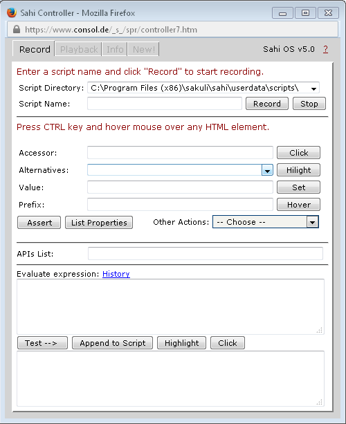
First, we want Sahi to check if there is for example the Sakuli Logo on the page. Hold the CTRL key and move the mouse pointer on the logo. Watch the Sahi Controller: it detects the HTML elements below the mouse pointer and generates the accessor method for "image" automatically:
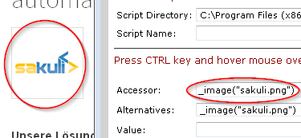
Click on "Assert" to let Sahi autogenerate assertion methods:
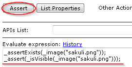
Just copy the second line (which checks the visibility of an element) into the clipboard and paste it into your testcase your-testcase.js before the env.sleep(9999) statement.
Further, we want for example to assure that the contact form of the web page os displayed correctly. Move the mouse pointer down to the "Kontakt" link; Sahi should display the accessor _image("Kontakt zu ConSol")
-
This time use the "click" button on the controller
-
To execute a click; this also generates the complete browser action statement
-
copy/paste also into the test case
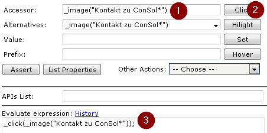
In the end, Sahi should check that the appeared popup window contains the text "Schreiben Sie uns!". You guessed it - move the mouse pointer over this text and click the "Assert" button again. The fourth assertion is the right one, which we also paste into the test script:
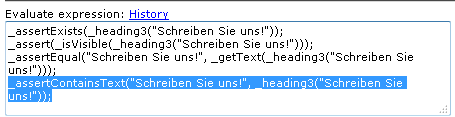
Now remove the "sleep" statement from the script file; it should look now like that:
_dynamicInclude($includeFolder);
var testCase = new TestCase(60, 70);
var env = new Environment()
try{
//your code
_assert(_isVisible(_image("sakuli.png")));
_click(_image("Kontakt zu conSol"));
_assertContainsText("Schreiben Sie uns!", _heading3("Schreiben Sie uns!"));
//env.sleep(9999);
} catch (e) {
testCase.handleException(e);
} finally {
testCase.saveResult();
}
Perhaps you want Sahi to highlight the items it is acting on: just use the _highlight() method from the debug helper API to mark each element with a red border before accessing it: _highlight(_image("sakuli.png"));
|
1.3.2.8. Sahi Recorder
Another method to copy/paste code is to record all steps into a file. For this, open the Sahi controller (Open the Sahi Controller), enter a filename and click on "record":
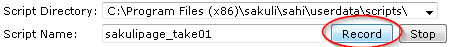
| actions like clicks are written to file automatically. All other actions like assertions can be written to file by clicking the button "Append to Script": 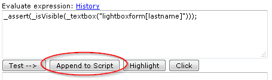 |
After you have clicked on "stop", open the recorded file, copy everything and paste the lines in to the Sakuli testcase your-testcase.js file.
1.3.2.9. Sahi settings
Browser selection
You may want to change the browser due to the following reasons:
-
to check if a web test (made with Sahi methods) for browser A is also running properly on browser B
-
to run a headless browser
-
just for curiosity :-)
-
to keep the browser in background while Sakuli tests a non-web application (e.g. fat client)
-
In addition to the possibilities described property testsuite.browser, see Property loading mechanism, the generic Sakuli starter sakuli/sakuli.exe can also be given the parameter -browser:
sakuli run /path/to/suite -browser chromeBrowser configuration
If the Sahi dashboard does not show any browser or if you want to add another browser to the dashboard …

… you have to edit SAHI_DIR/userdata/config/browser_types.xml. Each browser is defined within a browserType block. Please refer to the Sahi Documentation, "Configure Browsers" to see the browserType Nodes for popular browsers.
For PhantomJS please save sahi.js into the folder SAHI_DIR\phantomjs\ and use this option line:
<options>--proxy=localhost:9999 __SAHI_DIR__\phantomjs\sahi.js</options>Attention: PhantomJS 2 is currently unsupported. Use version 1.9.x
Sahi behind a proxy
Set the following properties (globally in sakuli.properties) to define a proxy Sahi should connect to.
### HTTP/HTTPS proxy Settings
### Set these properties, to enable the test execution behind company proxies
# Use external proxy server for HTTP*
ext.http.proxy.enable=true
ext.http.proxy.host=proxy.yourcompany.com
ext.http.proxy.port=8080
ext.http.proxy.auth.enable=false
ext.http.proxy.auth.name=user
ext.http.proxy.auth.password=password
# Use external proxy server for HTTPS
ext.https.proxy.enable=true
ext.https.proxy.host=proxy.server.com
ext.https.proxy.port=8080
ext.https.proxy.auth.enable=false
ext.https.proxy.auth.name=user
ext.https.proxy.auth.password=password
# There is only one bypass list for both secure and insecure.
ext.http.both.proxy.bypass_hosts=localhost|127.0.0.1|*.internaldomain.com|www.verisign.comHTTPS support in Sahi
This documentation is not complete yet. Any help is appreciated.
This will work on most systems, especially the ones you have full control over.
-
Open Sahi Dashboard, start the browser.
-
On the Sahi start page, navigate to the https site you want Sahi to trust (e.g. https://github.com)
-
You will be presented a message that this page "connection is not secure/trusted".
-
On Firefox, click "I understand the risks."
-
On Chrome, click "Proceed anyway (unsecure)"
-
On IE, click "Continue to the website (not recommended)".
-
Once the page has loaded, click "SSL Manager" from the Sahi start page
-
You should be presented a green check mark right of the https URL, indicating that Chrome accepted the site’s certificate, signed by Sahi:
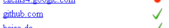
| This is a browser-specific solution and can be different in newer Browser versions or other operating systems! |
-
Open Sahi Dashboard, start Chrome
-
On the Sahi start page, navigate to the https site you want Sahi to trust (e.g. https://github.com )
-
You will be presented a message that this page "connection is not secure". Click on the red-crossed locker symbol left of the URL in the address bar and then "Certificate information"
-
Change to tab "Details" and press "Copy to File…"
-
In the following export assistent, save the certificate as "Cryptographic Message Syntax Standard PKCS #7 Certificates (.P7B)""
-
Go to Chrome preferences, "Manage certificates"
-
"Import…" -> select the exported .p7b certificate (in the "Open" dialogue, chnange the filename extension filter to "PKCS#1" )
-
Choose "Trusted Root Certification Authorities" as certificate store
-
Accept the Import confirmation.
-
Restart Chrome from the Sahi dashboard.
-
From the Sahi start page (step #2), click "SSL Manager"
-
You should be presented a green check mark right of the https URL, indicating that Chrome accepted the site’s certificate, signed by Sahi:
-
Open Sahi Dashboard, start Firefox/Firefox portable
-
On the Sahi start page, navigate to the https site you want Sahi to trust (e.g. https://github.com )
-
You will be presented a message that this page "connection is not secure". Click on I understand the risks" and add the certificate exception. Now navigate back to the sahi start page and click on the Link "SSL Manager":
You will be promptet again a security warning for connecting to "sahi.example.com" (a local dummy domain), add the certificate here also as an exception.
The following page contains a list of all so far trusted and untrusted domains and their certificates. To import the red marked into the browser’s certificate store, open the links by clicking them with the middle mouse key. This opens the page within a new tab; only in this way you are allowed to add the certificate exception.
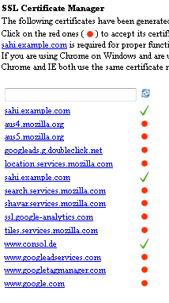
You can close every opened tab when it is displaying "Successfully connected" for the domain:
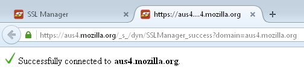
Now go back to the SSL Manager overview and click the "refresh" button. Every previously untrusted domain should now be marked as OK:
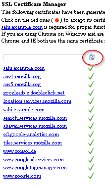
See Sahi description Configure SSL in Sahi.
1.3.3. Troubleshooting
1.3.3.1. Growing Firefox profile folder
If you experience that the Sahi profile folders sahi0-9 of Mozilla Firefox (located in sahi\userdata\browser\ff\profiles) are getting bigger and bigger: this is caused by two bugs:
We do not know any Firefox settings which can prevent the creation of SQLITE writeahead-logs (if you do, please let us know). The only pragmatic solution at the moment is to delete all SQLITE files periodically or before each Sakuli run (e.g. by running as a preHook). %SAKULI_HOME%\bin\helper\ff_purge_profile.bat contains an example for windows.
1.3.3.2. Hanging applications
If you are testing applications which tend to hang/freeze, you can run a "tidy-up"-Script by using the -pre-Hook option of Sakuli:
sakuli run __INST_DIR__/example_test_suites/example_ubuntu/ -preHook 'cscript.exe %SAKULI_HOME%\bin\helper\killproc.vbs -f %SAKULI_HOME%\bin\helper\procs_to_kill.txt'In procs_to_kill.txt you can define which processes should be killed before Sakuli starts a new check:
# Full path:
C:\Program Files\Mozilla Firefox\firefox.exe
C:\Program Files\Internet Explorer\iexplore.exe
# Using wildcards (%):
java%sakuli.jar1.3.3.3. Sikuli does not recognize images
If Sikuli does not recognize regions on the screen or does recognize the wrong ones, check the following list of possible reasons:
-
Run the client’s OS on a fixed resolution: Some applications/OS scale window elements slightly depending on the resolution. for example, if you are running Sakuli within Virtualbox, the guest OS changes its resolution as soon as you resize the VM window. The dimensions of window elements can then slightly diverge by 1-2 pixels from the screenshots taken before. This difference is small for human’s eyes, but a big one for Sikuli. Make sure to disable features like "Auto-Adjust Guest Display" and set the Client’s desktop to a common resolution (e.g. 1024x768). Side note: the smaller you set the resolution, the less work has to be done by Sikuli.
-
Disable any image compression algorithms in your screenshot capturing program (Greenshot, Shutter, …). Otherwise Sikuli will compare compressed pattern images with umcompressed image data on the screen, which will fail for sure.
-
Sikuli uses a similarity value of 0.99 by default. That value (range: 0-0.99) determines that more than (X * 100) % of the region pixels have to match. If Sikuli does not recognize anything or the wrong regions, try to slightly decrease the similarity** by changing 'sakuli.region.similarity.default' globally or inside a test e.g. with
env.setSimilarity(0.8). This should only be neccessary if the pattern images are of poor quality or the screen always differs slightly from the pattern images (e.g. due to compression of remote sessions like vnc). Please note that a similarity of "1" would mean that "more than 100%" of the region pixels would have to match - which is completely wrong.
1.3.3.4. Missing keystrokes on type or failing paste
Sikuli keyboard events (type()`and `paste()) on a Sahi-controlled browser instance can get lost if they are executed at the same time when Sahi internal status requests are sent from the browser to the Sahi proxy (default: 10x per sec).
For this reason, Sikuli type/paste methods first extend the Sahi status interval to the value of sahi.proxy.onSikuliInput.delayPerKey (in ms) which is long enough to execute one keyboard action. For the method type (which is "press/release character by character""), a multiple if this value is chosen. Before leaving the paste/type method, the interval gets reset by Sakuli to the default Sahi status interval.
This setting is not needed if Sikuli does keyboard actions on GUIs not controlled by Sahi.
1.3.3.5. Application.getRegion() returns NULL
If the execution of new Application("…").open().getRegion() throws a NullPointerException or retruns null, firstly turn on debug logging, see [logging]. Then you mostly will see at the log output that an OS based library is missing.
On Ubuntu or other Linux based OS check if the packe wmctrl is installed. If not install it via:
sudo apt-get install wmctrl1.4. Integration in other Tools
Sakuli can hand over test result to "Forwarder", which can be currently feed different tools like Nagios based monitoring systems or continuous integration server. If no forwarder is defined, a result summary is printed out in the end of a suite.
Feel free to develop another forwarder or ask us to do this.
| Forwarder | Technology | Use cases |
|---|---|---|
default |
- Log-Files and screenshots |
- Continuous Integration server |
- JDBC-SQL |
- Integration in Nagios based monitoring systems as active checks with check_mysql_health |
|
- Gearman |
- Integration in Nagios based monitoring systems as passive checks |
|
- Icinga2 REST API |
- Integration in Icinga2 as passive checks |
1.4.1. Monitoring integration
1.4.1.1. OMD preparation
This chapter describes all necessary steps to prepare a OMD site with a Nagios compatible monitoring system to receive Sakuli test results with one of the forwarders gearman, database or icinga2-api. For some parts of this documentation, OMD with Thruk as web frontend will be presupposed, but any other Nagios based system will do also (the configuration steps may vary then).
| If you want to run OMD-Labs in a container then check out the OMD-Labs on Docker project. |
Requirements
-
OMD installed on a Linux operating system
-
a running OMD site
Sakuli will produce HTML formatted output. HTML escaping in the monitoring core must be turned off:
OMD[sakuli]:~$ vim etc/nagios/cgi.cfg
escape_html_tags=0Now choose one of the Sakuli forwarder modules.
1.4.1.2. Gearman forwarder
This page describes how the results of Sakuli tests can be transmitted directly into the Gearman result queue of a monitoring system.
| If you do not use a gearman-enabled monitoring system in a OMD environment, the procedure may vary. |
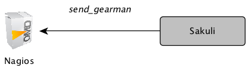
OMD Configuration
Stop the OMD site:
OMD[sakuli]:~$ omd stopStart the OMD configuration menu
OMD[sakuli]:~$ omd configSelect Distributed Monitoring and
-
->
GEARMAND->ON -
->
GEARMAND_PORT->OMD_IP:GEARMAN_PORT(default: 4730) -
->
GEARMAN_NEB->ON -
->
GEARMAN_WORKER->OFF# only if workers aren’t still used -
->
MOD_GEARMAN->ON
| As Sakuli only uses the result queue of gearmand, you can disable all other queues unless you are using mod-gearman for regular checks: |
OMD[sakuli]:~$ vim ~/etc/mod-gearman/server.cfg
eventhandler=no
services=no
hosts=no
do_hostchecks=noRestart OMD:
OMD[sakuli]:~$ omd startUse the Makefile located in $OMD_ROOT/share/sakuli/ to install predefined Nagios/Naemon service templates (optional):
OMD[foo]:~/share/sakuli/setup$ make config
cp ./omd/etc/nagios/conf.d/sakuli_nagios_templates.cfg /omd/sites/foo/etc/core/conf.d/
omd reload core
Reloading naemon configuration (PID: 17405)... OKCreate a service which should receive Sakuli test results. Host/service names derive from the following properties:
-
host:
sakuli.forwarder.gearman.nagios.hostname(defined globally or per suite) -
service:
testsuite.id(defined intestsuite.properties)
define service {
service_description example_xfce
host_name sakuli_client
use tpl_s_sakuli_gearman
freshness_threshold 180
}| freshness_threshold should be slightly higher than the interval Sakuli tests are executed |
The check is waiting now for check results from a Sakuli client.
Sakuli Client Configuration
On the Sakuli client you must set the global properties for the gearman receiver. For this, edit sakuli.properties in the folder containing the test suites (you can copy the lines from SAKULI_HOME/conf/sakuli-default.properties):.
__INST_DIR__/example_test_suites/sakuli.properties:
sakuli.forwarder.gearman.enabled=true
sakuli.forwarder.gearman.encryption=false
sakuli.forwarder.gearman.secret.key=secret_password
sakuli.forwarder.gearman.server.host=__GEARMAN_IP__
sakuli.forwarder.gearman.server.port=[Gearman Port defined in "omd config" (default:4730)]
sakuli.forwarder.gearman.server.queue=check_results (1)
# Nagios host where all Sakuli services are defined on. If neccessary, override this value per test suite.
# (Nagios service name is defined by testsuite.properties -> suiteID)
sakuli.forwarder.gearman.nagios.hostname=sakuli_client
sakuli.forwarder.gearman.nagios.check_command=check_sakuli| 1 | Change this queue name if you use the Sakuli Gearman proxy |
Using AES encryption (optional)
The gearman forwarder supports AES encryption when sending checked results to the OMD server. The AES encryption uses a 32 byte (256 bit) secret key that has to be given in the properties.
sakuli.forwarder.gearman.encryption=true
sakuli.forwarder.gearman.secret.key=secret_passwordIn case you get a java.lang.security.InvalidKeyException with error message "Illegal key size or default parameters" you probably
need to enable unlimited strength security policies in your Java JRE. This is done by adding a special security policy JAR to the Java JRE lib directory. For the Java JRE 8, take a look at Oracle - Java Cryptography Extension 8.
On the server side (OMD) you have to enable the encryption feature of mod-gearman. Therefore the following two steps are necessary:
1) Set the server side encryption password:
OMD[sakuli]:~$ echo "secret_password" > ~/etc/mod-gearman/secret.key2) Enable the encryption and disable accept_clear_results in the config file:
OMD[sakuli]:~$ vim ~/etc/mod-gearman/server.cfg
encryption=yes
accept_clear_results=yesGearman proxy (optional)

Use the Sakuli gearman proxy script if you want to intervene into the communication between Sakuli and Naemon/Nagios.
Possible use cases:
-
Change parts of the messages Sakuki sends to the monitoring system ⇒ there are some examples contained already
-
Getting notified when Sakuli sends results to services which do not exists
-
Auto-create services for incoming results (not yet implemented)
Use the Makefile located in $OMD_ROOT/share/sakuli/ to enable the feature:
OMD[demo]:~/share/sakuli/setup$ make gearman_proxy
cp ./omd/etc/init.d/sakuli_gearman_proxy /omd/sites/demo/etc/init.d/
chmod +x /omd/sites/demo/etc/init.d/sakuli_gearman_proxy
cp ./omd/local/bin/sakuli_gearman_proxy.pl /omd/sites/demo/local/bin/
cp ./omd/etc/mod-gearman/sakuli_gearman_proxy.cfg /omd/sites/demo/etc/mod-gearman/Edit etc/mod-gearman/sakuli_gearman_proxy.cfg:
$remoteHost="172.17.0.2"; (1)
$remotePort="4730"; (1)
$localHost="172.17.0.2"; (2)
$localPort="4730"; (2)
$queues = {
"$remoteHost:$remotePort/check_results_sakuli" => "$localHost:$localPort/check_results",
}; (3) (4)
$err_h = 'error_host'; (5)
$err_s = 'eror_svc';
$err_r = '2'; (6)| 1 | Gearman IP/Port listening for Sakuli results. Set this to the same values as <2> unless gearman_proxy.pl is running on another system. |
| 2 | Gearman IP/Port of the monitoring system |
| 3 | check_results_sakuli ⇒ queue name to receive Sakuli results. Make sure this queue name is defined in property sakuli.forwarder.gearman.server.queue on all Sakuli clients (see Sakuli Client Configuration) |
| 4 | check_results ⇒ default queue of mod-gearman where gearman workers write back their results. (no need to change that) |
| 5 | The proxy does a livestatus query for each incoming package to ensure that the receiving host/service exists. Provide a special "error host/service" pair where the proxy can send a message when there are results coming in for non-existent services. |
| 6 | Status of messages for non-existent services (2=CRITICAL) |
Start the proxy:
OMD[demo]:~$ omd start sakuli_gearman_proxy
Starting sakuli_gearman_proxy...OKCheck that the queue check_results_sakuli is running in addition to the default queue check_results.
OMD[demo]:~$ gearman_top
2017-06-09 13:37:28 - localhost:4730 - v0.33
Queue Name | Worker Available | Jobs Waiting | Jobs Running
-----------------------------------------------------------------------
check_results | 1 | 0 | 0
check_results_sakuli | 1 | 0 | 0
-----------------------------------------------------------------------
This change does affect other monitoring checks executed with mod-gearman, because only Sakuli will send results into the queue check_results_sakuli.
|
1.4.1.3. Database forwarder
This page describes how the results of the Sakuli tests (e.g. example_windows7/ubuntu/opensuse) can be written into a MySQL database which is then checked asynchronously by the monitoring system with check_mysql_health.
| If you do not use MySQL in a OMD environment, the procedure may vary. |
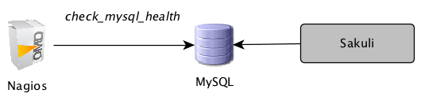
OMD Configuration
If not already done for other reasons, a site-specific MySQL instance has to be started. That’s the place where all Sakuli clients will store their check results.
Stop the OMD site and start the OMD configuration menu:
OMD[sakuli]:~$ omd stop
...
OMD[sakuli]:~$ omd configSelect Addons -> MYSQL -> ON and exit the menu.
Open ~/.my.cnf and set the following values:
OMD[sakuli]:~$ vim .my.cnf
# make sure to choose a free port, e.g. 3007
port = __DB_PORT__
# bind on all interfaces
bind-address = 0.0.0.0
# enable network access
#skip-networkingCreate the system tables for the new database and start OMD afterwards. You should see now OMD coming up with a dedicated MySQL instance:
OMD[sakuli]:~$ mysql_install_db
OMD[sakuli]:~$ omd start
Starting dedicated Apache for site sakuli...OK
Starting MySQL... .OK.
Starting rrdcached...OK
Starting npcd...OK
Starting nagios...OK
Initializing Crontab...-
Create the Sakuli database as described here: Create Sakuli DB
-
Check the connection with check_mysql_health:
OMD[sakuli]:~$ lib/nagios/plugins/check_mysql_health -H __DB_IP__ --username __DB_USER__ --password __DB_PASSWORD__ --database sakuli --port __DB_PORT__ --mode connection-time OK - 0.24 seconds to connect as sakuli | connection_time=0.2366s;1;5
Nagios fetches Sakuli check results using the plugin check_mysql_health, which is already contained in OMD.
The Perl module CheckMySQLHealthSakuli.pm enhances the functionality of check_mysql_health by introducing the mode --my-sakuli-suite.
Create a config directory for check_mysql_health and copy the module there:
OMD[sakuli]:~$ mkdir etc/check_mysql_health
OMD[sakuli]:~$ cp __TEMP__/setup/nagios/CheckMySQLHealthSakuli.pm etc/check_mysql_health/Set USER macros for static vars in resource.cfg, which makes it easy to use them in all nagios checks:
OMD[sakuli]:~$ vim ~/etc/nagios/resource.cfg
# database name
$USER10$=sakuli
# database user
$USER11$=__DB_USER__
# database password
$USER12$=__DB_PASSWORD__
# database port
$USER13$=__DB_PORT__
# check_mysql_health module dir
$USER15$=/opt/omd/sites/sakuli/etc/check_mysql_health/
# database IP
$USER16$=__MySQL_Database_IP__Create a new check_command:
OMD[sakuli]:~$ vim etc/nagios/conf.d/commands.cfg
# check_command for Sakuli
# --name = Suite ID
# --name2 = number of seconds the last result is allowed to be old
define command {
command_name check_sakuli
command_line $USER1$/check_mysql_health \
--hostname=$USER16$ \
--database=$USER10$ \
--username=$USER11$ \
--password=$USER12$ \
--mode=my-sakuli-suite \
--name='$ARG1$' \
--name2=$ARG2$ \
--report=html \
--port=$USER13$ \
--with-mymodules-dyn-dir=$USER15$
}Create a host object for Sakuli database checks (the checks are executed on the local machine, but belong logically to sakuli_client):
OMD[sakuli]:~$ vim etc/nagios/conf.d/hosts.cfg
define host {
host_name sakuli_client
alias sakuli_client
address __SAKULI_CLIENT_IP__
use generic-host
}Create the following service object for the first test case. Note the ARG2 in check_command: the database check will only evaluate the last result if it is max. 180 seconds old. If older, the check will return UNKNOWN. (For comparison: this is equivalent to "freshness_threshold" if you would use the Gearman forwarder. In any case, you should set the RRD heartbeat to the same value to get a gap in the graph if recent client results are missing. )
OMD[sakuli]:~$ vim etc/nagios/conf.d/services.cfg
define service {
# service_description example_windows7
# service_description example_opensuse
service_description example_ubuntu
host_name sakuli_client
use generic-service,srv-pnp
check_command check_sakuli!sakuli_demo!180
}Reload OMD:
omd reloadNow open Thruk; you should see now the Sakuli host with one service attached:

Re-scheduling this service should display the UNKNOWN message that the requested suite could not be found. For the moment, this is ok:
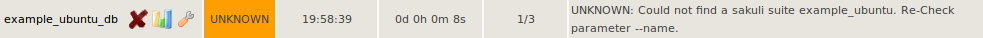
Sakuli Client Configuration
On the Sakuli client you must set the global properties for the database receiver, as described here: Enable database forwarder
Execute one of the example test case:
-
Ubuntu:
sakuli run INST_DIR/example_test_suites/example_ubuntu/ -
openSUSE:
sakuli run INST_DIR/example_test_suites/example_opensuse/ -
Windows 7:
sakuli run INST_DIR\example_test_suites\example_windows7\ -
Windows 8:
sakuli run INST_DIR\example_test_suites\example_windows8\
The service should change its status to:
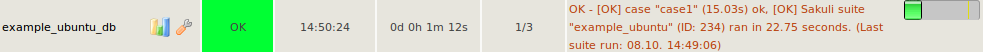
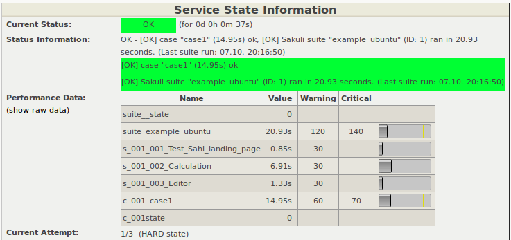
Database cleanup (optional)
Sakuli’s database can get very large over time. Use the following database maintenance script to keep only the most recent data.
OMD[sakuli]:~$ cp `__SAKULI_HOME__/bin/helper/mysql_purge.sh local/bin/`Create a OMD crontab entry for a automatic database cleanup of data older than 90 days:
OMD[sakuli]:~$ vim etc/cron.d/sakuli
00 12 * * * $OMD_ROOT/local/bin/mysql_purge.sh 90 > /dev/null 2>&1After that, reload the OMD crontab:
OMD[sakuli]:~$ omd reload crontab
Removing Crontab...OK
Initializing Crontab...OKTroubleshooting
Possible error 1: mysql_install_db fails:
141021 16:40:03 [Warning] Can't create test file /omd/sites/sakuli/var/mysql/omd2.lower-test
ERROR: 1005 Can't create table 'db' (errno: 13)Possible error 2: MySQL startup fails:
OMD[sakuli]:~$ omd start
Starting gearmand...OK
Starting MySQL... ..........ERROR.
Starting rrdcached...OKSolution:
Check /var/log/syslog or /var/log/messages for apparmor messages:
…
Oct 21 17:08:21 omd2 kernel: [116300.215520] type=1400 audit(1413904101.323:27): apparmor="DENIED" operation="open" profile="/usr/sbin/mysqld" name="/opt/omd/sites/sakuli/.my.cnf" pid=13136 comm="mysqld" requested_mask="r" denied_mask="r" fsuid=999 ouid=999
…Apparmor has prevented you from using a non-default config file for MySQL. If you know how to create a apparmor profile for MySQL on OMD, let us know :-)
The quick solution is to completely disable apparmor. Check if unloading apparmor profiles solves the problem:
root@omd:~# service apparmor teardown
* Unloading AppArmor profilesIf so, execute the following command to uninstall apparmor:
root@omd2:~# apt-get remove apparmor1.4.1.4. Icinga2 forwarder
This page describes how the results of Sakuli tests can be sent to the REST API of an Icinga2 monitoring instance.
| This part of the documentation does not apply to OMD. Some steps may vary for Icinga2 on OMD. |
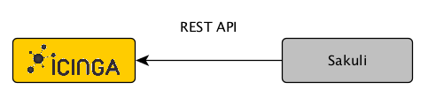
Icinga2 Configuration
The steps to enable the Icinga2 API are described in the REST API documentation.
Create a check_command, which will be executed only if Icinga did not receive a Sakuli result within a certain time. This ensures that you get a notification even if no passive check results arrive in Icinga at all:
vim /etc/icinga2/conf.d/commands.conf
object CheckCommand "check_dummy" {
import "plugin-check-command"
command = [
PluginDir + "/check_dummy","$dummy_state$","$dummy_text$"
]
vars.dummy_state = 0
vars.dummy_text = "Check was successful."
}
object CheckCommand "check_sakuli" {
import "check_dummy"
vars.dummy_state = 3
vars.dummy_text = "No passive Sakuli check result received."
}Create a host object for the Sakuli client:
vim /etc/icinga2/conf.d/hosts.conf
object Host "sakuliclient01" {
import "generic-host"
address = [IP]
}Create the following service object for the first test case. freshness_threshold should be slightly higher than the interval Sakuli tests are planned (if you are using PNP4Nagios, see also RRD heartbeat )
object Service "sakuli_demo" {
import "generic-service"
host_name = "sakuliclient01"
check_command = "check_sakuli"
enable_active_checks = 0
enable_passive_checks = 1
enable_flapping = 0
volatile = 1
enable_perfdata = 1
}Reload Icinga2:
service icinga2 reloadNow open Icingaweb2; you should see the Sakuli host with the service "sakuli_demo" attached:
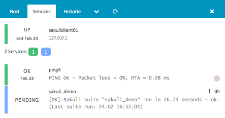
The check is waiting now for check results from a Sakuli client.
Sakuli Client Configuration
On the Sakuli client you must set the global properties for the Icinga2 receiver. For this, edit sakuli.properties in the folder containing the test suites (you can copy the lines from SAKULI_HOME/conf/sakuli-default.properties):
sakuli.forwarder.icinga2.enabled=true
sakuli.forwarder.icinga2.api.host=__ICINGA_IP__
sakuli.forwarder.icinga2.api.port=5665
sakuli.forwarder.icinga2.api.username=icingasakuli
sakuli.forwarder.icinga2.api.password=icingasakuli
sakuli.forwarder.icinga2.hostname=sakuliclient01Execute one of the example test case:
-
Ubuntu:
sakuli run INST_DIR/example_test_suites/example_ubuntu/ -
openSUSE:
sakuli run INST_DIR/example_test_suites/example_opensuse/ -
Windows 7:
sakuli run INST_DIR\example_test_suites\example_windows7\ -
Windows 8:
sakuli run INST_DIR\example_test_suites\example_windows8\
The service in Icnga2 should change its status to:

Graph settings
Icinga2 integration is very new; we did not yet dive into the configuration of Graphite or Grafana graphs. The only supported graphing solution is PNP4Nagios. Nevertheless you are welcome to contribute graph templates for Grafana and/or Graphite!
Set the RRD storage type of PNP to MULTIPLE, which creates one RRD file per perfdata label:
echo "RRD_STORAGE_TYPE = MULTIPLE" > /etc/pnp4nagios/check_commands/check_sakuli.cfgCopy the PNP graph template check_sakuli.php from %SAKULI_HOME%/setup/nagios/ on the client to /usr/share/nagios/html/pnp4nagios/templates/ on the Icinga2 server.
1.4.1.5. Screenshot history
INFO: This section applies to OMD-Labs and the web interface Thruk. To use the screenshot history functionality on other platforms/web interfaces, the steps may vary.
Feature description
In case of an exception, Sakuli takes a screenshot of the current screen and embeds this image into the service output (base64 encoded). The user is able to view the screenshot on the monitoring user interface.
The drawback of this method is that the screenshot only resists in the monitoring core’s memory; as soon as the test recovers, the test output changes back to OK and the image is gone. There are the Nagios/Naemon event logs to inspect former exceptions, but they do not contain the screenshots (fortunately).
With the Screenshot history feature, the monitoring core (Nagios/Naemon/Icinga) fires a event handler script each time the check has a CRITICAL result. The script analyzes the service output, parses the image data and stores it on the local file system within a folder structure published by the OMD site apache process. Sakuli services contain a Thruk action menu which allow the user to see all saved screenshots.
Activating the feature
Use the Makefile located in $OMD_ROOT/share/sakuli/ to enable the feature:
OMD[demo]:~/share/sakuli/setup$ make screenshot_history
cp ./omd/local/lib/nagios/plugins/sakuli_screenshot_eventhandler.sh /omd/sites/demo/local/lib/nagios/plugins/
cp ./omd/etc/nagios/conf.d/sakuli_screenshot_eventhandler.cfg /omd/sites/demo/etc/core/conf.d/
cp ./omd/local/bin/sakuli_screenshot_cleanup.sh /omd/sites/demo/local/bin/
cp ./omd/etc/cron.d/sakuli_screenshot_cleanup /omd/sites/demo/etc/cron.d/
cp ./omd/etc/thruk/ssi/*.ssi /omd/sites/demo/etc/thruk/ssi/
cp ./omd/etc/thruk/thruk_local.d/sakuli_action_menu.conf /omd/sites/demo/etc/thruk/thruk_local.d/
cp ./omd/etc/apache/conf.d/sakuli_screenshots.conf /omd/sites/demo/etc/apache/conf.d/
omd reload crontab
Removing Crontab...OK
Initializing Crontab...OK
omd reload apache
Reloading dedicated Apache for site demo
omd reload core
Reloading naemon configuration (PID: 3511)... OKEvent handler
Now assign the command sakuli_screenshot_eventhandler to all Sakuli services:
define service {
service_description example_xfce
host_name sakuli_client
use tpl_s_sakuli_gearman_grafana
event_handler sakuli_screenshot_eventhandler
event_handler_enabled 1
}Each time a CRITICAL Sakuli result comes in, the eventhandler will log its actions:
OMD[demo]:$ tail -f var/log/sakuli_screenshot_eventhandler.log
...
[6893] 06/08/17 03:28:27 ---------------------------------------
[6893] 06/08/17 03:28:27 HOST/SERVICE: sakuli_client / example_xfce
[6893] 06/08/17 03:28:27 STATE: CRITICAL
[6893] 06/08/17 03:28:27 LASTSERVICECHECK: 1496892468
[6893] 06/08/17 03:28:27 PLUGIN_OUT: [CRIT] Sakuli suite "example_xfce" (23.11s) EXCEPTION: 'CASE "case1": STEP "Test_Sahi_landing_page": _highlight(_link("XSSL Manager")): TypeError: el is undefined Sahi.prototype._highlight@http://sahi ...\
[6893] 06/08/17 03:28:27 Found screenshot format: jpg
[6893] 06/08/17 03:28:27 IMG_DIR: /omd/sites/demo/var/sakuli/screenshots/sakuli_client/example_xfce/1496892468
[6893] 06/08/17 03:28:27 Moving /omd/sites/demo/tmp/sakuli/screenshot_1496892468.jpg to /omd/sites/demo/var/sakuli/screenshots/sakuli_client/example_xfce/1496892468/screenshot.jpg
[6893] 06/08/17 03:28:27 Writing image path to InfluxDB...
[6893] 06/08/17 03:28:27 InfluxDB responded: < HTTP/1.1 404 Not Found
[6955] 06/08/17 03:29:18 ---------------------------------------Thruk action_menu
Open $OMD_ROOT/etc/thruk/thruk_local.d/sakuli_action_menu.conf and adapt the section <action_menu_apply>. The following example applies the action_menu only on services whose host names begin with "sakuli". See the Thruk documentation for more examples.
# Apply the action_menu on all services of hosts starting with "sakuli"
<action_menu_apply>
sakuli_history_menu = ^sakuli.*;.+$
</action_menu_apply>After reloading the web server you should see a small dropdown arrow on each Sakuli service, giving you access to the screenshot history lightbox:
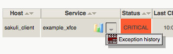
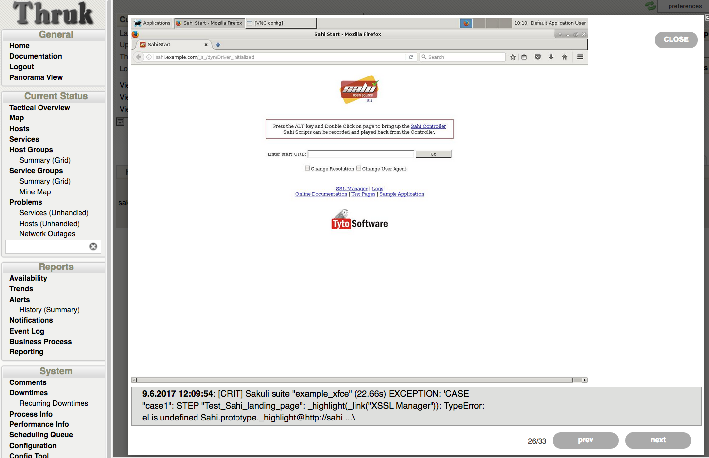
The lightbox always shows the last/current screenshot and the error message. To navigate forth/back, use the left/right arrow keys or the buttons in the bottom right corner. Press Esc to close the box again.
Grafana integration
Read the Grafana screenshot annotations section if you want to integrate the screnshots as Grafana annotations.
| For PNP4Nagios there is no such feature available. |
1.4.1.6. Grafana graphs
| This section is written for OMD-Labs environments with InfluxDB/Grafana enabled. It may be useful for others too, but the steps may vary then. |
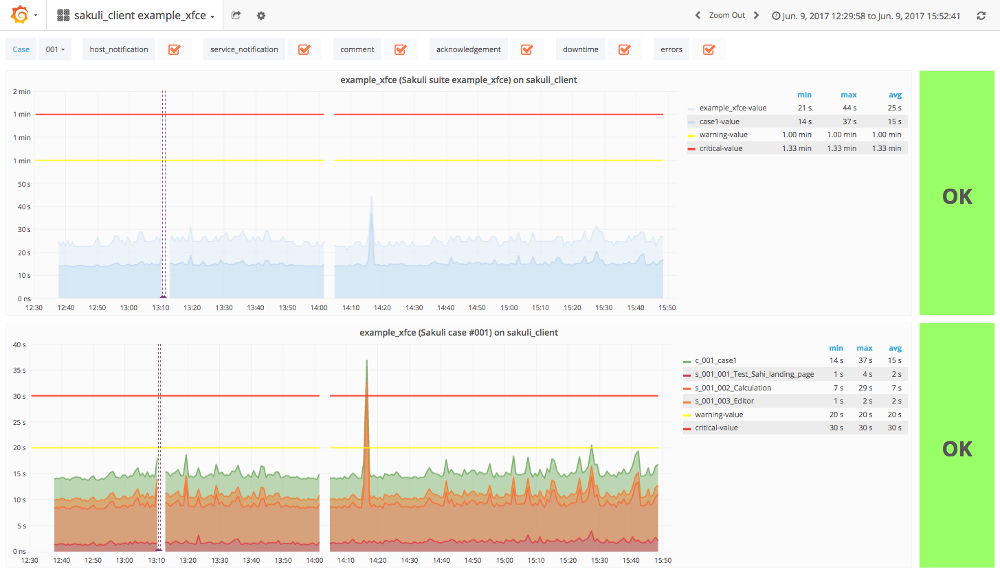
Feature activation
Check the OMD Labs documentation for infos on how to enable Grafana/InfluxDB.
OMD-Labs already contains a graph template check_sakuli for Histou, the Grafana templating system.
|
Screenshot annotations
Grafana graphs can also show screenshots of the Screenshot history as anotations.
Execute the Sakuli Makefile to patch the influxDB init script. It will restart InfluxDB and create the Sakuli image database:
OMD[demo]:~/share/sakuli/setup$ make grafana
patch -d /omd/sites/demo -p0 < ./omd/etc/init.d/sakuli_influxdb.patch
patching file etc/init.d/influxdb
omd restart influxdb
Stopping influxdb.....OK
Starting influxdb....OKIn case of an exception, the screenshot history event_handler saves the image on the file system and its path into the InfluxDB database "sakuli" (measurement: images).
Violet vertical lines in the Sakuli graph indicate a saved screenshot. Hover the mouse over the bottom of the line to show the thumbnail:
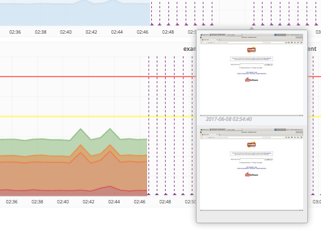
Click the thumbnail to get the image enlarged.
1.4.1.7. PNP4Nagios graphs
RRD Storage Type
In PNP4Nagios RRD Storage type "MULTIPLE" is of great importance for Sakuli checks, because the number of steps can change by time (=if you are adding/deleting some).
Verify RRD_STORAGE_TYPE in process_perfdata.cfg:
OMD[sakuli]:~$ vim ~/etc/pnp4nagios/process_perfdata.cfg
RRD_STORAGE_TYPE = MULTIPLEIf this value is "SINGLE" on your system and you do not want to change it globally, use the custom check_command cfg file. PNP4Nagios will then use storage type "MULTIPLE" only for this check_command then:
OMD[sakuli]:~$ cp __TEMP__/sakuli-vx.x.x-SNAPSHOT/setup/nagios/check_sakuli.cfg ~/etc/pnp4nagios/check_commands/RRD heartbeat
Each RRD file contains a heartbeat value, which determines how much time must pass without any new update, before RRDtool writes an UNKNOWN value (nan) into the data slot (the graph will have a gap then). In PNP4nagios heartbeat is defined at approx. 2 1/2 hours. If your Sakuli check runs only every 2 hours, this value will be fine. But for a 5 minute interval, this is way too long. As a consequence, the graph line will be continuously drawed even Sakuli did no check for two hours. Hence, always make sure to adapt the heartbeat to a value which is slightly higher than the interval of Sakuli checks (and indeally the same as [omd-gearman-freshness_threshold], if you use the gearman receiver):
OMD[sakuli]:~$ cd ~/var/pnp4nagios/perfdata/sakulihost/
# Sakuli check interval: 2 minutes --> RRD heartbeat 3 minutes
OMD[sakuli]:~$ for file in sakuli_e2e_webshop*.rrd; do rrdtool tune $file --heartbeat 1:180; doneinstall PNP graph template
Copy the PNP4nagios graph template into the templates folder:
OMD[sakuli]:~$ cp __TEMP__/sakuli-vx.x.x-SNAPSHOT/setup/nagios/check_sakuli.php ~/etc/pnp4nagios/templates/CPU/Memory metrics
If Sakuli reports a long check runtime, it is good to know the CPU/Memory metrics on the Sakuli client machine, because CPU/IO bottlenecks affect Sakuli tests, too.
The following optional enhancement displays the CPU/Memory graph lines of the Sakuli test client in the suite/case graph. By setting custom host macros, the graph template knows where to fetch these data from.

Add this command to commands.cfg:
define command{
command_name check_local_load
command_line $USER1$/check_load -w $ARG1$ -c $ARG2$
}Add this service to services.cfg:
define service {
service_description CPU_Load
host_name sakuli_client
use generic-service,srv-pnp
# if Sakuli checks are running on the same machine (as in the demo VM)
check_command check_local_load!2.5,1.5,1!5,3.5,2
# if Sakuli checks are running on another host than OMD
check_command check_by_ssh!check_load!2.5,1.5,1!5,3.5,2
}Add this custom host macros to every Sakuli host in hosts.cfg:
define host {
…
_E2E_CPU_HOST sakuli_client
_E2E_CPU_SVC CPU_Load_load5
}Now reload OMD:
omd reloadYou should see now the following service on sakuli_client:
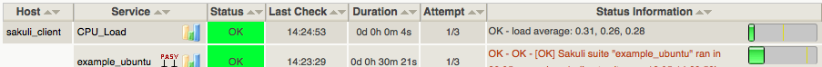
The value of _E2E_CPU_SVC and _E2E_MEM_SVC refer to the file name of the corresponding RRD file. CPU_Usage_5 for example means to get the the CPU usage data from $OMD_ROOT/var/pnp4nagios/perfdata/[_E2E_CPU_HOST]/CPU_Usage_5.rrd.
|
Install NSClient++ on the Windows client. Then add this command check_nrpe_arg:
vim ~/etc/nagios/conf.d/commands.cfg
define command {
command_name check_nrpe_arg
command_line $USER1$/check_nrpe -H $HOSTADDRESS$ -c $ARG1$ -a $ARG2$
}Then add these services to Nagios:
define service {
service_description CPU_Usage
host_name win7sakuli
use generic-service,srv-pnp
check_command check_nrpe_arg!CheckCPU!warn=80% crit=90% time=15 time=5 time=1 ShowAll
}
define service {
service_description Mem_Usage
host_name win7sakuli
use generic-service,srv-pnp
check_command check_nrpe_arg!CheckMem!MaxWarn=80% MaxCrit=90% ShowAll type=page type=paged type=physical type=virtual
}Add these host macros to every Nagios host where Sakuli checks are defined:
_E2E_CPU_HOST win7sakuli
_E2E_CPU_SVC CPU_Usage_5
_E2E_MEM_HOST win7sakuli
_E2E_MEM_SVC Mem_UsageNow reload OMD:
omd reload
The value of _E2E_CPU_SVC and _E2E_MEM_SVC refer to the file name of the corresponding RRD file. CPU_Usage_5 for example means to get the the CPU usage data from $OMD_ROOT/var/pnp4nagios/perfdata/[_E2E_CPU_HOST]/CPU_Usage_5.rrd.
|
As soon as the created services produce perfdata for the first time, their XML file created by PNP4Nagios will also contain the host macros created in the step before. If not, check if XML_UPDATE_DELAY in etc/pnp4nagios/process_perfdata.cfg is set too high.
OMD runs PNP by default in Bulk Mode with NPCD and npcdmod.o. In this mode the Nagios broker module npcdmod.o reads the performance directly from the monitoring core and writes them in var/spool/perfdata. This data are not expandable with custom macros - therefore the mode has to be changed to Bulk Mode with NPCD. (the performance of both modes will be equal).
In this mode the monitoring core itself writes perfdata to the spool directory (instead of npcdmod.o). The format of this data can be freely defined by adapting service_perfdata_file_template. In the following code block you can see that the four custom host macros were added to this template string. Perfdata files are then moved to var/spool/perfdata every 15 seconds by the monitoring core.
Make sure to replace the OMD site name placeholder OMD_SITE with your site name! (in vim type :%s/OMD_SITE/yoursitename/g)
|
vim ~/etc/nagios/nagios.d/pnp4nagios.cfg
process_performance_data=1
# COMMENT THE LINE BELOW
# broker_module=/omd/sites/__OMD_SITE__/lib/npcdmod.o config_file=/omd/sites/__OMD_SITE__/etc/pnp4nagios/npcd.cfg
# services
service_perfdata_file=/omd/sites/__OMD_SITE__/var/pnp4nagios/service-perfdata
service_perfdata_file_template=DATATYPE::SERVICEPERFDATA\tTIMET::$TIMET$\tHOSTNAME::$HOSTNAME$\tSERVICEDESC::$SERVICEDESC$\tSERVICEPERFDATA::$SERVICEPERFDATA$\tSERVICECHECKCOMMAND::$SERVICECHECKCOMMAND$\tHOSTSTATE::$HOSTSTATE$\tHOSTSTATETYPE::$HOSTSTATETYPE$\tSERVICESTATE::$SERVICESTATE$\tSERVICESTATETYPE::$SERVICESTATETYPE$\tE2ECPUHOST::$_HOSTE2E_CPU_HOST$\tE2ECPUSVC::$_HOSTE2E_CPU_SVC$\tE2EMEMHOST::$_HOSTE2E_MEM_HOST$\tE2EMEMSVC::$_HOSTE2E_MEM_SVC$
service_perfdata_file_mode=a
service_perfdata_file_processing_interval=15
service_perfdata_file_processing_command=omd-process-service-perfdata-file
# hosts
host_perfdata_file=/omd/sites/__OMD_SITE__/var/pnp4nagios/host-perfdata
host_perfdata_file_template=DATATYPE::HOSTPERFDATA\tTIMET::$TIMET$\tHOSTNAME::$HOSTNAME$\tHOSTPERFDATA::$HOSTPERFDATA$\tHOSTCHECKCOMMAND::$HOSTCHECKCOMMAND$\tHOSTSTATE::$HOSTSTATE$\tHOSTSTATETYPE::$HOSTSTATETYPE$
host_perfdata_file_mode=a
host_perfdata_file_processing_interval=15
host_perfdata_file_processing_command=omd-process-host-perfdata-fileCheck if the perfdata processing commands are present:
vim ~/etc/nagios/conf.d/pnp4nagios.cfg
define command{
command_name omd-process-service-perfdata-file
command_line /bin/mv /omd/sites/__OMD_SITE__/var/pnp4nagios/service-perfdata /omd/sites/__OMD_SITE__/var/pnp4nagios/spool/service-perfdata.$TIMET$
}
define command{
command_name omd-process-host-perfdata-file
command_line /bin/mv /omd/sites/__OMD_SITE__/var/pnp4nagios/host-perfdata /omd/sites/__OMD_SITE__/var/pnp4nagios/spool/host-perfdata.$TIMET$
}Restart the OMD site to unload the npcdmod.o module:
omd restartFirst reschedule the CPU/Mem check on the sakuli client. It can take several minutes to store the values in the RRD database. As soon as you can see "real" values in the PNP4Nagios graph of "CPU Load" (instead of “-nan”), restart the Sakuli check. The Sakui graph should now contain also CPU/Memory values.
1.4.3. SQL Database
This page describes how the results of Sakuli can be stored into a MySQL database which can be read by other 3rd party systems.
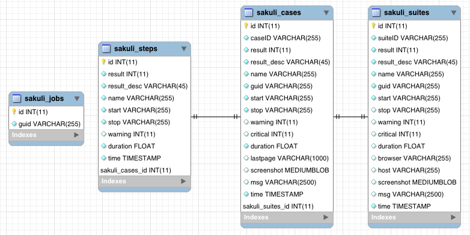
Create Sakuli DB
Create the Sakuli database and the DB user:
$ mysql < __TEMP__/sakuli-vx.x.x-SNAPSHOT/setup/database/create_sakuli_database.sqlCreate the database user:
$ mysql
grant ALL on sakuli.* to '__DB_USER__'@'%' identified by '__DB_PASSWORD__';
flush privileges;
quitCheck the connection with your favorit SQL tool:
Enable database forwarder
On the Sakuli client you must set the properties for the database receiver. For this, edit sakuli.properties in the folder containing the test suites (you can copy the lines from SAKULI_HOME/conf/sakuli-default.properties):
__INST_DIR__/example_test_suites/sakuli.properties:
# DEFAULT: false
sakuli.forwarder.database.enabled=true
#DEFAULT: mysql
sakuli.forwarder.database.jdbc.driverClass=com.mysql.jdbc.Driver
sakuli.forwarder.database.host=__DB_IP__
sakuli.forwarder.database.port=__DB_PORT__
sakuli.forwarder.database=sakuli
sakuli.forwarder.database.user=__DB_USER__
sakuli.forwarder.database.password=__DB_PW__Execute the example test case:
-
Ubuntu:
sakuli run INST_DIR/example_test_suites/example_ubuntu/ -
openSUSE:
sakuli run INST_DIR/example_test_suites/example_opensuse/ -
Windows 7:
sakuli run INST_DIR\example_test_suites\example_windows7\ -
Windows 8:
sakuli run INST_DIR\example_test_suites\example_windows8\
The database should now contain the results.
Integration in other tools
You can find queries using the Sakuli DB in /setup/nagios/CheckMySQLHealthSakuli.pm in the extracted Sakuli sources folder.
We are looking forward to reading your story of how you integrated the DB results in your toolchain.
Database cleanup (optional)
Sakuli’s database can get very large over time. Use the following database maintenance script to keep only the most recent data.
Create a crontab entry for a automatic database cleanup of data older than 90 days:
~$ crontab -e
00 12 * * * $SAKULI_HOME/bin/helper/mysql_purge.sh 90 > /dev/null 2>&1After that, the crontab should be active.
1.5. Developer Documentation
In this section you will find a few helpful documentation for developers who want to contribute.
-
Jenkins-CI labs-build.consol.de/view/Sakuli
-
Some additional Maven aspects
-
(only for Linux) sikulix-supplemental package
1.5.1. Installation guide for Sakuli-Developers
For the following guide you need
-
Access to the issue-tracker tool (currently GitHub-Issues and internal GitLab)
-
Git
-
Development environment (we advise IntelliJ IDEA)
-
Maven 3 (check version
mvn -version)
For Ubuntu users!!! - check the maven version with apt show maven
|
-
Java JDK 1.8
-
Please use the original Oracle JDK - OpenJDK unfortunately won’t work for the JavaFX based integration test, until #245 is not closed. Also see Install JavaFX
-
Ensure that your
JAVA_HOMEsystem variable links to the correct jdk-version
Import
-
Check out the project via git
-
Import the project as a maven-project
Maven Settings
-
Ensure that you have at least installed maven 3, run
mvn -version -
Config the local maven settings
~/.m2/settings.xmlfor your environment as follows:
<settings xmlns="http://maven.apache.org/SETTINGS/1.0.0"
xmlns:xsi="http://www.w3.org/2001/XMLSchema-instance"
xsi:schemaLocation="http://maven.apache.org/SETTINGS/1.0.0
http://maven.apache.org/xsd/settings-1.0.0.xsd">
<server>
<id>labs-consol-sakuli-install</id>
<username>sakuli</username>
<privateKey>${user.home}/.ssh/your-key-file</privateKey>
</server>
<server>
<id>labs-consol-sakuli-repository</id>
<username>maven-repository</username>
<privateKey>${user.home}/.ssh/your-key-file</privateKey>
</server>
</settings>-
Download Sahi5 from https://labs.consol.de/sakuli/install/3rd-party and execute the sahi installation:
java -jar install_sahi_v50_20141105.jar.jar-
Install Sahi into
<project-dir>/sahi. Ensure that this path is set insahi.proxy.homePathin filesakuli.properties.
| You only need to install the components: Sahi Core, Tools Userdata |
Setup a local MySQL database to save the results of test case executions. The database won’t be needed for running mvn install.
-
User:
sakuli -
Password:
sakuli -
Database:
sakuli -
SQL-Script: create_sakuli_database.sql
If you want to use a Docker-Container, you can build and run it with the following commands:
cd src/common/src/main/resources/org/sakuli/common/setup/database/create_sakuli_database
docker build -t=your-user/mysql-sakuli .
docker run --name mysql-sakuli -p 3306:3306 your-user/mysql-sakuli-
Execute
mvn clean verifyto ensure that the setup is correct -
Include the license header to your IDE
-
For IntelliJ see Help or our predefined copyright configuration:
Sakuli - Testing and Monitoring-Tool for Websites and common UIs.
Copyright 2013 - $today.year the original author or authors.
Licensed under the Apache License, Version 2.0 (the "License");
you may not use this file except in compliance with the License.
You may obtain a copy of the License at
http://www.apache.org/licenses/LICENSE-2.0
Unless required by applicable law or agreed to in writing, software
distributed under the License is distributed on an "AS IS" BASIS,
WITHOUT WARRANTIES OR CONDITIONS OF ANY KIND, either express or implied.
See the License for the specific language governing permissions and
limitations under the License.
-
In order to run Sakuli test cases directly from the IDE, you need to build up a run configuration. For IntelliJ see the predefined run configurations under intellij/runConfigurations
-
classpath of module:
sakuli-core -
working directory:
$MODULE_DIR$ -
main class:
org.sakuli.starter.SakuliStarter -
program arguments: [[source]
-run <path to your Sakuli test suite folder> --sakuli_home <path to your "main" folder> --sahi_home <path to your sahi folder>
e.g. for the provided Win7 example use:
-run ../sakuli_test_suites/example src/main/_include ../sahi-
To run the testng tests correctly and prevent wrong file paths, set the default TestNG config like follow: 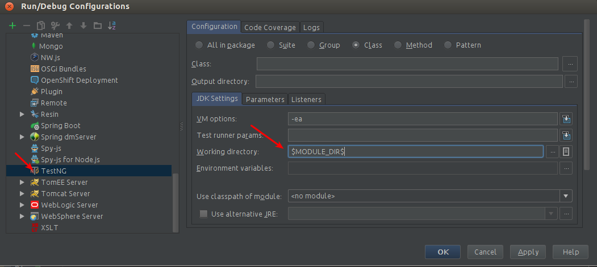
| Startup error: If you run your Sakuli test the first time, you might get a native library error, caused by Sikuli, saying that it could not find the correct native library to work with. At the same time, Sikuli already tried to fix the problem by modyfing PATH. Solution: Just log out and in again, so that the modified PATH-Variable will be read. Sakuli should start now without any error. |
-
Ensure that you have installed the latest JDK-8 version with included JavaFX
-
Ensure that the system variable
java.homepoints to your JDK directory and includes the file${java.home}/lib/ext/jfxrt.jar -
(optional) Download the JavaFX SceneBuilder for development from Oracle
-
(optional) Install the SceneBuilder to your IDE:
-
Intellij see Oracle-Help-Page
-
1.5.2. How to create a new release
-
Check if all features are merged in dev
-
Check if
changelog.adocis correct
-
Go to Jenkins - Sakuli_perform_release and execute the job and set the parameters
REL_VERSIONandDEV_VERSION -
Check if maven artifacts have been deployed at https://labs.consol.de/maven/repository/org/sakuli/
-
Check the new taged verison on DockerHub with same
REL_VERSIONfor the following images: DockerHub - Sakuli -
Test the new docker images as long the sakuli-exampels are not in the automated build
-
Check te latest documentation is updated at http://consol.github.io/sakuli/.
-
Make a new GitHub Release:
-
Add
sakuli-vXXX-installer.jarandsakuli-vXXX.zipfrom https://labs.consol.de/sakuli/install/ to a new release XXX -
Copy the latest changelog to the new release page
-
Check and publish new release
-
1. Dry-run (if needed)
Generate a new relase over jgitflow-maven-plugin (branch: release/xxx):
mvn jgitflow:release-start -DnoDeploy=true -DpushReleases=false -DlocalOnly=trueDo a dry-run without deploying and pushing any new files:
mvn jgitflow:release-finish -DnoDeploy=true -DpushReleases=false -DlocalOnly=trueDelete all local git changes and branches
2. Release
Generate a new relase over jgitflow-maven-plugin (branch: release/xxx):
mvn jgitflow:release-startExecute the following commands, to update the Dockerfiles to the new release version at the branch release/xxx .
docker/update_sakuli_version.sh --new-version $REL_VERSION
git commit -am "update Dockerfiles to REL-Version v$REL_VERS"Start the release deploying and pushing any new branches and tags if needed:
mvn jgitflow:release-finishGo to the dev branch and adjust the version of the Dockerfiles:
docker/update_sakuli_version.sh --new-version $DEV_VERS
git commit -am "update Dockerfiles to DEV-Version v$DEV_VERS"Push your changes:
git push --allFinally delete the no longer needed remote feature branch and do the manual release steps from above (after Jenkins job):
git branch -d <branchName>
git push origin --delete <branchName>Re-use a tag
To re-use an already set tag, remove it from git (local and remote):
# delete the tag locally:
git tag -d sakuli-X.X.X`
# push to remote:
git push --delete origin sakuli-X.X.X`General
-
Check your maven settings in
~/.m2/settings.xml: -
Ensure that your private key has access rights for user
sakuli@labs.consol.de -
Ensure that your private key is added to ssh-agent:
ssh-add <path-to-key> -
Check proxy settings - the server
labs.consol.demust be reachable -
Ensure that the ConSol-Labs server is configured correctly, see SQL Database
1.5.3. Maven aspects
Following default lifecycle actions are currently used:
mvn clean deploy-
Compiles the sources with the
aspectj-maven-pluginto weave the source code and the dependencies -
Executes all unit tests
-
Executes all integration tests (without UI-Tests)
-
Adds the built maven artifacts to the local workspace
-
Builds the
sakuli-vX.X.X.zip`and `sakuli-vX.X.X-installer.jarfile locally -
Deploys the maven artifacts to the local repository
mvn testRuns all steps until step 2.
mvn verifyRuns all steps until step 3
mvn installRuns all steps until step 6
See the instruction: How to create a new release
Profiles can be added with option -P, followed by a parameter, e.g.
mvn install -P upload-release-
upload-releaseCopies the generatedsakuli-zipped-release-vX.X.X.zip,sakuli-vX.X.X-installer.jarfile and maven artifacts to the ConSol Labs server. Your private key for the ssh connection have to be configured in maven config file.m2/settings.xml:
.m2/settings.xml <servers>
<server>
<id>labs-consol-sakuli-install</id>
<username>sakuli</username>
<privateKey>${user.home}/.ssh/id_rsa</privateKey>
</server>
<server>
<id>labs-consol-sakuli-repository</id>
<username>maven-repository</username>
<privateKey>${user.home}/.ssh/id_rsa</privateKey>
</server>
</servers>-
ui-testsEnables the UI based test in phase integration-test in the modulintegration-testandjava-dsl. -
generate-manualThis profile will generate the AsciiDoc documentation in the module docs-manual, see AsciiDoc documentation aspects. -
generate-markdownThis profile will generate Markdown file in the module docs the file Sakuli API.
| To use the profile behind a HTTP/HTTPS proxy, be aware that the following things are configured: |
1) include in your $M2_HOME/settings.xml the proxy tag (if needed):
<proxies>
<proxy>
<id>my-proxy-config</id>
<active>true</active>
<protocol>http</protocol>
<host>proxy.company.com</host>
<port>8888</port>
</proxy>
</proxies>2) configure your system HTTP and HTTPS proxy over Environment (for Ubuntu). Set in bash.rc:
export http_proxy=http://proxy.company.com:8888/
export https_proxy=http://proxy.company.com:8888/
export ftp_proxy=http://proxy.company.com:8888/-
cl(internal use) This profile will be only to build a custom installer for CL.
for example for the sahi JARs, more information see: guide-3rd-party-jars-remote.
install to local repo
mvn install:install-file -DgroupId=net.sf.sahi -DartifactId=sahi -Dversion=5.1 -Dpackaging=jar -Dfile=sahi-5.1.jar
mvn install:install-file -DgroupId=net.sf.sahi -DartifactId=ant-sahi -Dversion=5.1 -Dpackaging=jar -Dfile=ant-sahi-5.1.jar
mvn install:install-file -DgroupId=net.sf.sahi -DartifactId=sahi-install -Dversion=5.1 -Dpackaging=zip -Dfile=sahi-install-5.1.zipinstall to remote repo
mvn deploy:deploy-file -DgroupId=net.sf.sahi -DartifactId=sahi -Dversion=5.1 -Dpackaging jar -Dfile=sahi-5.1.jar -Drepository=labs-consol-sakuli-repository -Durl=scpexe://labs.consol.de/home/maven-repository/www/htdocs/repositoryor copy the local artifacts via SCP:
scp -r ~.m2/repository/net/sf/sahi/sahi/5.1 maven-repository@labs.consol.de:/home/maven-repository/www/htdocs/repository/net/sf/sahi/sahi/5.11.5.4. AsciiDoc documentation aspects
Execute:
mvn install -f src/docs-manual/pom.xml -P generate-manual
The Asciidoctor-maven-plugin now generates a HTML page and the PDF:
$ ls src/docs-manual/target/generated-docs/
$ ls src/docs-manual/target/generated-docs/pdfThen you can open the file src/docs-manual/target/generated-docs/index.html in your favourite browser.
If you want to update the Github Page consol.github.io/sakuli, just add the profile upload-manual:
mvn install -f src/docs-manual/pom.xml -P generate-manual,upload-manual
OR use the Jenkins CI job Sakuli_CI_update_documentation
While writing the documentation it is useful to have a live preview. For this you can do the following:
Start the auto-refresh goal of the Asciidoctor-maven-plugin, which re-creates the html pages as soon as there are changes on the file system:
mvn clean install -f src/docs-manual/pom.xml -P generate-manual-watchThen use one of the following methods to serve the documentation locally with an ad-hoc webserver:
python -m SimpleHTTPServer (1)
live-server src/docs-manual/target/generated-docs (2)| 1 | Open a small python adhoc web server on http://127.0.0.1:8000 (manual refresh) |
| 2 | Install and open the NPM based "live-server" on http://127.0.0.1:8080; will refresh the broewser window on every page recreation. |
Currently there is no fully automated way between the documented Sakuli API in docs/manual/testdefinition/sakuli-api.md and the final docs/manual/testdefinition/sakuli-api.adoc .
Following Steps have to be executed:
1) Generate the sakuli-api.md file
Run the maven markdown generation build:
mvn install -f src/docs-sakuli-api/pom.xml -P generate-markdownThe markdown file will be generated under: docs/manual/testdefinition/sakuli-api.md
2) Convert to AsciiDoc
pandoc -s -S sakuli-api.md -t asciidoc -o sakuli-api.adoc
3) Copy & paste the changed content to one of matching the files and maybe adjust heading level to .Class.method():
$ ls docs/manual/testdefinition/sakuli-api*.adoc
docs/manual/testdefinition/sakuli-api.adoc
docs/manual/testdefinition/sakuli-api-application.adoc
docs/manual/testdefinition/sakuli-api-environment.adoc
docs/manual/testdefinition/sakuli-api-key.adoc
docs/manual/testdefinition/sakuli-api-logger.adoc
docs/manual/testdefinition/sakuli-api-mouse-button.adoc
docs/manual/testdefinition/sakuli-api-region.adoc
docs/manual/testdefinition/sakuli-api-testcase.adocReplace GitHub issues #999 numbers with links:
Search Regex:
#(\d+)Replace expression:
https://github.com/ConSol/sakuli/issues/$1[#$1]1.5.5. sikulix-supplemental package
| Only for Linux Operating Systems! |
The current build libVisionProxy.so is already included in the fork toschneck/SikuliX-2014 and the following maven dependency:
<dependency>
<groupId>com.sikulix</groupId>
<artifactId>sikulixapi-complete</artifactId>
<version>1.1.990/version> (1)
</dependency>| 1 | Version can be newer, but with prefix 1.1.99 |
-
Download under SikuliX-2014/Setup/SikuliX-1.1.0-Beta-Supplemental-Linux.zip
-
Unzip and read included README
-
Do the following steps.
sudo apt-get install libcv-dev
sudo apt-get install libtesseract-dev
./ubuntu14_openCV_symbolic_links.sh
./makeVisionProxy-
replace the
libVisionProxy.sofile
3. Publications
01/2017: Java aktuell: Automatisiertes Testen in Zeiten von Microservices (Christoph Deppisch / Tobias Schneck)
10/2016: Informatik Aktuell: Software-Test im Container: So können Sie Graphical User Interfaces mit Docker und Sakuli testen (Tobias Schneck)
10/2016: ConSol Labs: Containerized UI-Tests in Java with Sakuli and Docker (Tobias Schneck)
10/2016: ConSol Labs: Sakuli EndToEnd Tests mit Android (Philip Griesbacher)
8/2016: heise Developer: Testautomatisierung in Zeiten von Continuous Delivery (Christoph Deppisch / Tobias Schneck)
2/2016: IT Administrator: "Den Anwender simuliert" (Simon Meggle)
2/2015: IT Administrator: End2End-Monitoring mit dem Open Source-Tool Sakuli (Simon Meggle)
4. Events
April 27, 2017: Stuttgarter Test-Tage, Stuttgart: Testing - Selenium? Rich-Clients? Containers? (Tobias Schneck)
January 30 - February 3, 2017: OOP 2017, Munich (Tobias Schneck)
January 19, 2017: Agile Testing Meetup - Testen im Zeitalter von Containern, Munich (Tobias Schneck)
→ Slides: Containerized End-2-End-Testing
November 16, 2016: ContainerConf 2016, Mannheim (Tobias Schneck)
November 3, 2016: Software QS-Tag 2016, Nuremberg (Tobias Schneck)
September 30, 2016: JUG Saxony Day, Dresden (Tobias Schneck)
→ Slides: Containerized End-2-End-Testing (German)
August 31, 2016: Herbstcampus 2016, Nuremberg (Tobias Schneck)
July 25, 2016: JUG München (Tobias Schneck)
June 27, 2016 Meetup during the ContainerDays, Hamburg (Tobias Schneck)
→ Slides: Containerized End-2-End-Testing
March 8-10, 2016: JavaLand, Brühl (Tobias Schneck)
March 3, 2016: Allianz Arena München (Simon Meggle)
March 1, 2016: Icinga Camp, Berlin (Simon Meggle)
January 26, 2016: Linux-Stamtisch München (Tobias Schneck)
October 24, 2015: Ubucon Berlin (Simon Meggle)
October 13, 2015: Testing & Integration Day, Allianz Arena Munich (Tobias Schneck)
June 22, 2015: Agile Testing Munich (Tobias Schneck)
May 14, 2015: OpenTechSummit (Simon Meggle)
March 28, 2015: LinuxTag Augsburg (Simon Meggle)
2014: ConSol Internal DevDay (Tobias Schneck)
→ Slides: End-to-end testing for web sites and common UIs with full Nagios integration
5. Media
Episode 9 of the ConSol Monitoring Minutes shows the main features of Sakuli in 15 minutes. The machine used in this video is an instance of our demo appliance.


6. Change Log
-
issue #210: upgrade Sahi to version
5.1due to Sahi compatibility issue with Chrome 53+ andregion._click() -
fix docker images
-
Chrome don’t startup under CentOS Docker image, see also https://github.com/ConSol/docker-headless-vnc-container/issues/2
-
XFCE window manager don’t startup under CentOS Docker image, see also https://github.com/ConSol/docker-headless-vnc-container/issues/4
-
use
SAKULI_VERSIONARG in Dockerfiles, to have more flexible to build images
-
-
issue #215 add java-based Sakuli Docker images
-
issue #91: add AES encryption option for Gearman forwarder module
-
add Java JCE extension to Docker images
-
-
fix #216: set
dom.storage.enabledto true in firefox pref.js -
add Sakuli-Example page https://github.com/ConSol/sakuli-examples
-
fix #177 add description for the javaDSL and update the documentation
-
issue #205: use maven-jgitflow for releases and branching
-
fix #190: fix Docker centos image: use tagged version
consol/centos-xfce-vnc:1.0.1 -
Use consistent file naming and fix broken links in docs
-
fix example_xfce for new centos 7 version
-
First step tutorial and https documentation. Fixes #161, fixes #53 partially.
-
fix #32 highlight function on linux does not work (in underlying SikuliX library)
-
close #102 add method
dragAndDropToto theRegionobject -
Changed order of properties.
-
Improve example_xfce:
-
Replaced calculator screenshot by a small one.
-
add mouse move action to example_xfce
-
-
close #139 remove PDF als download content type, to enable to use the browser PDF viewer
-
close #139 add start chrome + firefox maximised (firefox have to hold the file
localstore.rdfin his profile folder) -
close #168 add reboot hint if user install the package
Windows environement changes -
update the installer translation to the recommend one from https://github.com/izpack/izpack/tree/master/izpack-core/src/main/resources/com/izforge/izpack/bin/langpacks/installer
-
fix maven snapshot repository path of the
labs.consol.demaven-repository '''
-
Move to a new binary starter for Windows and Linux (sakuli.exe / sakuli), #150:
-
modify VNC documentation to flag
-preHookandpostHook -
change documentation and docker scripts to new starter syntax
sakuli run TEST_SUITE [OPTION] -
add binaries
sakuliandsakuli.exefrom repo https://github.com/ConSol/sakuli-go-wrapper -
remove
sakuli.sh/sakuli.bat -
Change syntax from the new starter to:
-
Usage: sakuli[.exe] COMMAND ARGUMENT [OPTIONS] sakuli -help sakuli -version sakuli run <sakuli suite path> [OPTIONS] sakuli encrypt <secret> [OPTIONS] Commands: run <sakuli suite path> encrypt <secret> Options: -loop <seconds> Loop this suite, wait n seconds between executions, 0 means no loops (default: 0) -javaHome <folder> Java bin dir (overrides PATH) -javaOption <java option> JVM option parameter, e.g. '-agentlib:…' -preHook <programpath> A program which will be executed before a suite run (can be added multiple times) -postHook <programpath> A program which will be executed after a suite run (can be added multiple times) -D <JVM option> JVM option to set a property at runtime, overrides file based properties -browser <browser> Browser for the test execution (default: Firefox) -interface <interface> Network interface card name, used by command 'encrypt' as salt -sahiHome <folder> Sahi installation folder -version Version info -help This help text
-
Add new forwarder module
Icinga2, see #145:-
Rest client to send the results to Icinga2 API
-
new property
sakuli.forwarder.gearman.nagios.template.suite.summary.maxLengthto cut to long output due to error messages -
introduce
sakuli.forwarder.icinga2properties // consolidatesakuli.forwarder.databaseproperties
-
-
Separate examples for Window 7 and Windows 8
-
close #118 improved output of nagios messages
-
close #151 add a bunch of Windows registry settings to the installer, to improve the test stability. Disables graphical effects, screen saver and error reporting.
-
fix #135 Environment similarity:
-
Extract constant Environment#DEFAULT_SIMILARITY to
sakuli-default.propertiesassakuli.environment.similarity.default: -
Set default similarity to
0.99 -
close #163: add clean up method, which release all modifier keys before a test case will startet and at the teardown phase
-
fix #162: release keys didn’t work correctly => update to sikulix version 1.1.998 and add function "run as admin" to dev suites
-
add an Around Aspect to
net.sf.sahi.util.Utils.getCommandTokensto fix parsing errors during calling native commands, see http://community.sahipro.com/forums/discussion/8552/sahi-os-5-0-and-chrome-user-data-dir-containing-spaces-not-working -
Documentation how to solve increasing sahi profile folders. Closes #164.
-
reduce wait times for example test suites
-
fix
firefox_portableexecutable path inbrowser.xml: replace it with $userDir relativ path -
consolidate forwarder properties: adjust
jdbc.properties tosakuli.forwarder.database.properties -
improve logging of database receiver
-
fix #153
sakuli.log.maxAgeerror, is smaller then 1 -
check_sakuli.php: added wrapper for function declarations to fix errors in PNP basket (cannot redefine…)
-
cl: update installer with special cl installer preselected options
-
close #155: add environment variables to –version output
-
fix for #158: linux installer correct firefox var to
MOZ_DISABLE_OOP_PLUGINS -
Added ff_purge_profile.bat to helper scripts (delete sqlite file before each run)
-
close #155: add -version parameter to Sakuli starter (sakuli / sakuli.exe)
-
close #153 log data rotation
-
add a property sakuli.log.maxAge in days (default 14 days)
-
deletes all files that are older than the defined days in the folder
sakuli.log.folder
-
-
add setting some firefox variables (
MOZ_DISABLE_OOP_PLUGINS,MOZ_DISABLE_AUTO_SAFE_MODE,MOZ_DISABLE_SAFE_MODE_KEY) for UI testing to the installer, see #158. -
Executable JAR installer
sakuli-vX.X.X-installer.jar, downloadable via https://labs.consol.de/sakuli/install, see #24. -
The installer contains a complete Sakuli setup and the following options:
-
will set/update the environment variable
SAKULI_HOMEto this version. -
will set/update the environment to a recommend UI testing configuration. In examples disables the Firefox safe.
-
will install one example test suite per OS which will help you to test and understand Sakuli.
-
will install Firefox Portable, which can be used exclusively for Sakuli Tests.
-
will install QRes, a open source screen mode changer (Windows only)
-
-
modify docker images to new headless linux installer
-
custom sahi
browser_types.xmlfor firefox, firefox_portable, chrome -
Property
sikuli.typeDelaynow also set theRobotDesktop.stdAutoDelayto make the delay more effective, default is0.0, #154. -
issue #149 add
Application.kill()to force closeting an app without "save prompts" -
issue #94: disable highlighting in case of an exception
-
docker container: modify test suite permissions after test run in
sakuli_startup.sh -
Improve typing handling #154:
-
typing all special characters via unicode keyboard shortcuts
-
keyboard mapping only contains alphanumeric characters, so region.type now will work with all local keyboards, because of typing special characters via UFT-8
-
Mac’s currently not supports directly typing UFT-8 keys, by default see https://en.wikipedia.org/wiki/Unicode_input#In_Mac_OS . Unicode typing will only be used if correct keyboard is activated.
-
-
improve takeScreenshot: now also can handle with absolute paths
-
rename
Region.takeScreenShottoRegion.takeScreenshot -
fix #107: Fix Sikuli
LinuxUtilImplementation of: -
Focus application
-
Closing application
-
Make output and control of native commands more flexible
-
include Sahi base installation to java DSL, #24
-
modify properties, so that all default values are included
-
add check that
testsuite.idwill be defined at least -
allow to write test without explicit image folder path, to enable java tests
-
-
added docker-container
sakuli-omd-labs-ubuntufor a Sakuli preconfigered OMD -
sakuli.bat: added exitcode, fixes bug #128 (Errors with paths containing spaces) -
fix #142: remove some not valid windows escape chars like
'or"to prevent a InvalidPathException in SakuliStarter arguments -
docker-containers.md: Added hint for boot2docker users.
-
check_sakuli.php: fixed #132 (suite runtime)
-
close #103: make docker-container able to override the running testsuite in
docker runCMDarguments -
make the
sakuli.shcommand line parameters usable indocker runCMDarguments, like for exampledocker run consol/sakuli-centos-xfce '--run $SAKULI_TEST_SUITE --browser chrome' -
Added documentation how to configure HTTPS in Sahi. #53
-
Rename README.md to index.md in case of https://readthedocs.org/projects/sakuli/
-
headless-linux.md: Added crontab documentation.
-
fix #116 wrong comma in gearman output
-
sakuli.bat: added SAKULI_HOME fallback if env var not set #124
-
sakuli.bat: added javahome parameter, added JVM option passing #122
-
update sikuliX version to 1.1.993
-
Merge branch 'dev-v0.4' into dev
-
sakuli.sh: JVM options (-D) allowed. #75
-
Improve Nagios monitoring integration:
-
check_sakuli.json: added first JSON template for grafana
-
check_sakuli.php: logfile destination now contains hostname and service description
-
check_sakuli.php: removed UNIT var. Everything is in seconds.
-
CheckMySQLHealthSakuli.pm: no perfdata on stale result (fixes #120), small output improvements
-
check_sakuli.php: fixed bug, Suite graph did not have correct value.
-
CheckMySQLHealthSakuli.pm: adjust perfdata output as on gearman output (closes #106)
-
Adapted mysql_purge.sh to new table names, added parameter. #10
-
-
Merge pull request #108 from sgbeal/master
-
Add Docker container
consol/sakuli-ubuntu-xfceandconsol/sakuli-centos-xfce, see #103:-
add return value to sakuli_startup.sh and add exit state to sakuli.sh script
-
HTML5-VNC client (noVNC) enabled containers
-
docker-compose.ymlexample for parallel test-execution -
add example_xfce_test for the docker-containers
-
-
fix PrioritizedServiceComparator so now 2 service with the same priority will also accepted
-
close #49 add Environment#runCommand method
-
add
takeScreenshot()method to Region object to get the current region as screenshot -
Merge pull request #99 from c-kr/dev
-
close #46 - add read the docs links and badge
-
improve the way to include additional image folders, #96:
-
add method
addImagePathsto the TestCase functions -
add variable '$testSuiteFolder' as global variable to JavaScript testcase.js for a more strait filepath handling
-
-
add optional parameter 'silent' to Application.close function to suppress exceptions
-
add OS identification functions 'isWindows', 'isLinux', 'getOsIdentifier' to Environment class
-
close #98 add source and javadoc files to maven build artifacts (on release-builds)
-
close #92 exclude Base64 String in log output
-
fix #95 state of suite/case/step is always 'OK', if no error occurs and warning + critical time is 0
-
close #81 Expanded color array in PHP template and change numbering scheme for cases and steps to 3-digits
-
close #74 extract logging functions to separate javascript class Logger
-
close #70 rename sakuli.screenbased.* properties to sikuli.*
-
close #42 rename Application#closeApp to Application#close in javascript
-
close #27 modify 'non screenshot exception handling' // add TestCaseAction#throwException(message,screenshot)
-
add mysql Dockefile for sakuli database forwarder setup, see #10
-
close #10 rename table name from sahi to sakuli
-
rewritten documentation for sahi delay.
-
close #79 rename property
sahi.proxy.requestDelayOnSikuliInput.delayTime->sahi.proxy.onSikuliInput.delayPerKeyandsahi.proxy.requestDelayOnSikuliInput.refreshTime->sahi.proxy.onSikuliInput.delayBeforeInput -
finish JavaDSL to be fully supported of all Sakuli features also in Java
-
fix #11 custom sahi-port handling (use different ports for sahi-proxy)
-
close #7 update sahi-jar verison to sahi 5.0
-
rename sakuli.autoHighlight.seconds to sakuli.highlight.seconds
-
Documentation
-
fix #72 modfy testsuite.suite file writer - just overwrite the file if any blank lines are inside
-
add Environment#resetSimilarity()
-
fix api generation script
-
improve error message for invalid paths in 'testsuite.suite' file
-
add support for more screenshot paterns - .jpg, .JPG, .png, .PNG
-
#52 rename sakuli.receiver properties to sakuli.forwarder
-
fix #71 add the resumeOnException flag to some missing handleException calls
-
refactor exception handling // improve exception handling for javaDSL
-
refactor dependency management // extract bin, config, libs to new common 'module'
-
#13 rename screeshot property to 'sakuli.screenshot.onError'
-
#20 enable testCase.endOfStep("name")
-
#66 add -b, –browser into sakuli.jar/sakuli.sh
-
#64 Added Linux (sakuli.sh) and Windows (sakuli.bat) starter.
-
#55 low-level-mouse functions, add mouseMove(), mouseUp(mouseButton), mouseDown(mouseButton)
-
#60 refactor command line options
-
#62 move log-level settings to sakuli.properties
-
#60 introduce a 'sakuli-default.properties' file to move the sakuli.properties to the test suite root
-
#60 introduce new file system structure
-
add #106 add warn/crit thresholds as perfdata values for the Gearman results
-
Adaption for 3-digit case/step ids
-
PNP template with unknown perfdata support
-
added TICKer for incomplete data, warn/crit states
-
Changed color scheme
-
-
add #77 separate error state to identify the affected TestCaseStep on errors:
-
modify SakuliExceptionHandler to find current Step and enable adding exception to the current step
-
add error message output for exceptions in TestCaseSteps
-
-
add #31 determine all not executed TestCaseSteps, to secure that the nagios performance graphs are displayed correctly:
-
introduce new TestCaseStepState INIT
-
modify nagios RRD performance data output for initialized and not started steps to typ 'unknown'
-
add caching mechanism the step information for not started steps implementation
-
call write cached steps information on every 'not error' result
-
gearman forward: write unknown values to every result line if a suite, case or step entity has finished with errors or have even not been called
-
database forwarder: write NULL instead of '0' at warning and critical times
-
-
add
takeScreenshot()method to Region object to get the current region as screenshot -
add troubleshooting for Nullpointer at
new Application("..").getRegion()to documentation -
fix PrioritizedServiceComparator so now 2 service with the same priority will also accepted
-
add jenkins-build badge
-
add #46 add dev-v0.4 read-the-docs & read-the-docs badge
-
add #96 add variable '$testSuiteFolder' fore more strait forward import handling
-
fix dependency path of javafx for java7
-
close #92 exclude Base64 String in log output
-
modify documentation of warning / critical times
-
add testcase.endOfStep function without warning time
-
add #81 change numbering scheme for cases and steps to always three digits to expanded color array in PHP template
-
fix bug: test suite has stat 'OK' instead of 'RUNNING' during the execution
-
improve logging for more information, see Sakuli - Manual
-
clearify the sakuli encryption functionality - modify documentation and improve the implementation, see #5
-
refactor data structure, see #60
-
extract
sakuli.propertiesto the test suits folder and introduce asakuli-default.propertiesfile.
-
add function
getLastUrl()to theTestCasefunctions, to enable URL based test case handling. -
uncomment some receiver properties in
sakuli.propertiesto make the property overriding more generic. -
fix bug that
new Region("image_pattern.png").click();always clicks on the center of the screen -
introduce experimental JAVA-DSL as new module
-
add
sleep()method to Region -
keyUp(…),keyDown(…)andwrite(…)method to the Region and Environment functions to have more control over the typing.
-
add method to set an delay for the sahi-status-requests, so that no key or click events will be lost by the JavaScript engine of the Browser, see new entry in
sakuli.properties:
# Specifies the interval in milliseconds, what should be applied when sikuli based input # (like typing or clicking) is interacting with a Browser website. # This setting only make sense, if your test does NOT use Sahi functions for controlling the # testing website. This setting will prevent the test for losing some key or click events # in case of blocking, synchronous sahi-interal state requests. # #sahi.proxy.requestDelayOnSikuliInput.delayTime=500 # ### refresh time for the sahi proxy to set the delay time #sahi.proxy.requestDelayOnSikuliInput.refreshTime
-
update release build so that the zipped-release files can be downloaded from http://labs.consol.de/sakuli/install.
-
remove zipped-release files from git repository
-
documentation update
-
build automatic sakuli-api documentation
-
clean up repository
-
introduce some maven-profiles for individual usage
-
change
.incand.sahfile ending to.js -
fixed some typos
-
set up jenkins build
-
centralized the configuration of properties files:
-
include/sakuli.propertiesnow contains all possible configuration options for Sakuli. These are the _default values for all tests -
<test-suite>/testsuite.propertiescontains the test suite specific configuration options. The only mandatory property here is the test suite identifiertestsuite.id. All other properties are optional. -
Options set in
testsuite.propertieswill override the default settings insakuli.properties
-
-
Proxy configuration options can now be set in
sakuli.properties(defaults) ortestsuite.properties(suite specific) -
Re-organized the folder structure of
sakuli-zipped-release-vX.X.X.zipand source code directory. -
Extended logging with more configuration possibilities (SLF4J with underlying logback-Logging)
-
Consolidation of the applicationContext files
-
Remove the program-based setting of system properties.
-
The possibility to disable the "encryption interface" with new property
sakuli.encryption.interface.testmode=true -
Added a separate module for integration testing
-
Bugfixing and extended unit tests
-
documentation update
-
Added a separate module for integration testing.
-
Bugfixing and extended unit tests.
-
Update the documentation
-
Introducing receiver concept: For each receiver the results will be sent. Currently Supported JDBC-Databases and the Gearman receiver.
-
Gearman receiver: sent all data directly to your OMD/Nagios distribution. Currently it is missing that the screenshots will also be transferred. This will be fixed in the next version
-
Bufixing in maven build, exception handling, testcase ids and added some more unit tests
7. Support
You want to use Sakuli in your project and need on-site help from our Sakuuli experts? You’ve got a specific question about Sakuli implementation, or you’re just looking for some guidelines and best practices in writing test cases or setting up your infrastructure? Please feel free to contact us! We will be glad to help you achieve your goals and a stable software application.
The Sakuli developers are the same that deal with high complex enterprise applications and cloud-based technology at our customers every day. So if you need special extensions or new features, do not hesitate to contact us! We would like to help you!
Also if you need Sakuli patches or fast access to special programming from the Sakuli development team contact us!
7.1. Training
Sakuli grew out of multiple software development and monitoring projects at ConSol. The Sakuli team can assist you not only in testing your enterprise applications but also in develop, operate and monitor those. If you looking for expert assistance regardless of which part - talk to us!
7.2. Contact
The Sakuli team members will listen on the following channels:
-
e-mail: sakuli@consol.de
-
GitHub issues: github.com/ConSol/sakuli/issues/new
The company behind Sakuli:
ConSol Software GmbH
Franziskanerstr. 38
D-81669 München
Tel. +49-89-45841-100
Fax +49-89-45841-111
E-Mail: info@consol.de
Website: www.consol.de